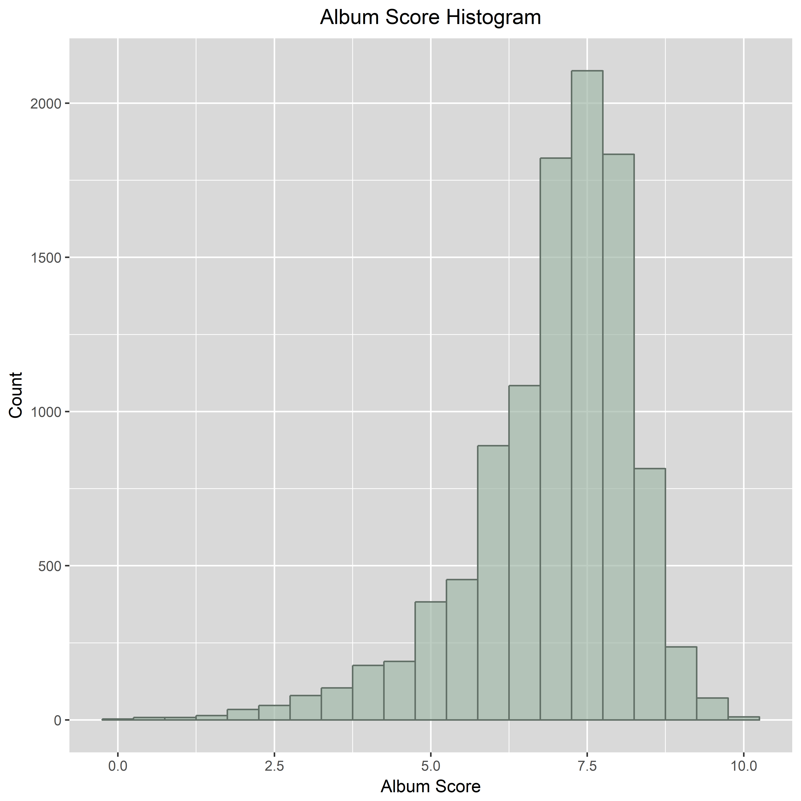

Music Album Rating and Playcount Prediction
In this project, I attempt to predict Pitchfork music album ratings and Last.fm album playcount based solely on music genre, Last.fm user-generated tags, record labels, album duration, the number of tracks and the year of release. Furthermore, I conduct linear regression analysis to assess the influence of these variables on album ratings and playcount. I use SQL to convert the initial Pitchfork review dataset into csv format, after which R is used to retrieve the appropriate data from the Last.fm API, merge the two datasets and perform the analysis itself.
Introduction
Whenever I am looking for a new project to work on. I tend to gravitate towards projects in which I can explore and quantify seemingly intangible matters such as student performance or movie taste as demonstrated in my two previous projects. Music is another prime example of such a theme. Not surprisingly, I was immediately excited to explore the Pitchfork music review dataset when I stumbled on it while browsing through public datasets on Kaggle.com. The dataset was stored in sqlite format, which was perfect because I was looking for an opportunity to refresh my SQL skills as well. My first idea was to perform sentiment analysis on the reviews in the dataset using natural language processing techniques and assess the performance of said techniques by comparing the sentiment score with the corresponding album rating. This proved more difficult than expected, due to the sophisticated manner in which reviewers expressed their opinions in their reviews. Instead of using words with a clear underlying sentiment, they tend to make use of metaphors or sarcasm, which is challenging to detect using traditional sentiment analysis techniques. Therefore, I decided to put that project on the backburner and instead focus on predicting the album review scores with the help of machine learning algorithms. Because the dataset only contained information limited to the reviews, release year, record labels and music genre, I decided to retrieve additional data from the Last.fm database such as playcount, popular user-generated tags, album duration and the number of tracks on the album. Because these variables say very little about the actual quality of the music itself, their predictive power is limited. However, it would be very interesting to see how far we can get and in which way they influence both playcount and review score. The R code used for this particular project can be found on my Github page.
The next section focuses on the retrieval and exploration of the data itself.
Data Preparation
The Pitchfork music review dataset is a public dataset available at kaggle.com and contains data on more than 18.000 Pitchfork reviews. Pitchfork is a popular online music magazine launched in 1995 that publishes music album reviews. The dataset contains various variables such as reviews, record labels, artists, release year and genres of each reviewed album.
Because the dataset is stored in an sqlite format, I wrote a simple SQL-query to produce a csv file with the desired data.
.open ../Projects/Pitchfork/database.sqlite
.headers on
.schema
CREATE TABLE `pitchfork` (`reviewid` , `title` , `artist` , `url` , `score` , `best_new_music` , `author` , `author_type` , `pub_date` , `pub_weekday` , `pub_day` , `pub_month` , `pub_year` , `genre` , `year`, `content`, `label`);
INSERT INTO pitchfork
SELECT reviews.*, genres.genre, years.year, content.content, labels.label
FROM reviews
LEFT JOIN genres
ON reviews.reviewid=genres.reviewid
LEFT JOIN years
ON reviews.reviewid=years.reviewid
LEFT JOIN content
ON reviews.reviewid=content.reviewid
LEFT JOIN labels
ON reviews.reviewid=labels.reviewid;
.mode csv
.output pitchfork.csv
select * from pitchfork;
.output stdout
This makes it easy to load the dataset into R for further exploration and analysis. After loading the dataset and required packages into my R environment, I converted data types in a more applicable format, removed duplicate entries and displayed a preview of what the dataset looks like.
# Load packages & data
library("reshape2")
library("ggplot2")
library("dplyr")
library("tidyr")
pitchfork <- read.csv("pitchfork.csv", header = TRUE, encoding = "UTF-8")
# Convert to appropriate data types
pitchfork$reviewid <- as.character(pitchfork$reviewid)
pitchfork$title <- as.character(pitchfork$title)
pitchfork$artist <- as.character(pitchfork$artist)
pitchfork$url <- as.character(pitchfork$url)
pitchfork$pub_date <- as.Date(pitchfork$pub_date, format = "%Y-%m-%d")
pitchfork$content <- as.character(pitchfork$content)
pitchfork$label <- as.character(pitchfork$label)
pitchfork$genre <- as.character(pitchfork$genre)
pitchfork$genre[pitchfork$genre == ""] <- "NA" # If there is no specified genre, impute NA
pitchfork$genre <- as.factor(pitchfork$genre)
# Remove duplicate entries
pitchfork <- pitchfork %>% distinct()
| reviewid | title | artist | url | score | best_new_music | author | author_type | pub_date | pub_weekday | pub_day | pub_month | pub_year | genre | year | content | label | |
|---|---|---|---|---|---|---|---|---|---|---|---|---|---|---|---|---|---|
| 1 | 22703 | mezzanine | massive attack | http://pitchfork.com/reviews/albums/22703-mezzanine/ | 9.30 | 0 | nate patrin | contributor | 17174.00 | 6 | 8 | 1 | 2017 | electronic | 1998 | “Trip-hop” eventually became a ’90s punchline, a m... | virgin |
| 2 | 22721 | prelapsarian | krallice | http://pitchfork.com/reviews/albums/22721-prelapsarian/ | 7.90 | 0 | zoe camp | contributor | 17173.00 | 5 | 7 | 1 | 2017 | metal | 2016 | Eight years, five albums, and two EPs in, the New ... | hathenter |
| 3 | 22659 | all of them naturals | uranium club | http://pitchfork.com/reviews/albums/22659-all-of-them-naturals/ | 7.30 | 0 | david glickman | contributor | 17173.00 | 5 | 7 | 1 | 2017 | rock | 2016 | Minneapolis’ Uranium Club seem to revel in being a... | fashionable idiots |
| 4 | 22659 | all of them naturals | uranium club | http://pitchfork.com/reviews/albums/22659-all-of-them-naturals/ | 7.30 | 0 | david glickman | contributor | 17173.00 | 5 | 7 | 1 | 2017 | rock | 2016 | Minneapolis’ Uranium Club seem to revel in being a... | static shock |
| 5 | 22661 | first songs | kleenex, liliput | http://pitchfork.com/reviews/albums/22661-first-songs/ | 9.00 | 1 | jenn pelly | associate reviews editor | 17172.00 | 4 | 6 | 1 | 2017 | rock | 2016 | Kleenex began with a crash. It transpired one nigh... | kill rock stars |
| 6 | 22661 | first songs | kleenex, liliput | http://pitchfork.com/reviews/albums/22661-first-songs/ | 9.00 | 1 | jenn pelly | associate reviews editor | 17172.00 | 4 | 6 | 1 | 2017 | rock | 2016 | Kleenex began with a crash. It transpired one nigh... | mississippi |
| 7 | 22725 | new start | taso | http://pitchfork.com/reviews/albums/22725-new-start/ | 8.10 | 0 | kevin lozano | tracks coordinator | 17172.00 | 4 | 6 | 1 | 2017 | electronic | 2016 | It is impossible to consider a given release by a ... | teklife |
| 8 | 22722 | insecure (music from the hbo original series) | various artists | http://pitchfork.com/reviews/albums/22722-insecure-music-from-the-hbo-original-series/ | 7.40 | 0 | vanessa okoth-obbo | contributor | 17171.00 | 3 | 5 | 1 | 2017 | NA | 2016 | In the pilot episode of “Insecure,” the critically... | rca |
| 9 | 22704 | stillness in wonderland | little simz | http://pitchfork.com/reviews/albums/22704-little-simz-stillness-in-wonderland/ | 7.10 | 0 | katherine st. asaph | contributor | 17171.00 | 3 | 5 | 1 | 2017 | rap | 2016 | Rapper Simbi Ajikawo, who records as Little Simz, ... | age 101 |
| 10 | 22694 | tehillim | yotam avni | http://pitchfork.com/reviews/albums/22694-tehillim/ | 7.00 | 0 | andy beta | contributor | 17171.00 | 3 | 5 | 1 | 2017 | electronic | 2016 | For the last thirty years, Israel’s electronic mus... | stroboscopic artefacts |
The table above depicts the first 10 rows of the Pitchfork dataset, which includes 17 features and more than 25.000 entries in total. Albums can have multiple entries when they possess multiple genres or record labels. Therefore, the next step is to one-hot encode the genre and label features. There are a total of 9 unique genres (not including the missing values), which means they can be trivially one-hot encoded by using the dcast method from the reshape2 package. The label feature however has more than 3000 unique values. Therefore, I grouped the labels with less than 50 occurrences in four different groups. Labels that occur less than 3 times get grouped into the "xsmall label" category. Record labels occurring between 3 and 9 times are part of the "small label" group. If the label shows up between 10 and 24 times it gets tagged as "medium label", while labels with more than 24 but less than 50 occurrences are considered a "large label". The record labels that occur 50 times do not belong to any category and serve as their own feature after one-hot encoding.
# Flatten dateframe by one-hot encoding genres (albums can have multiple genres)
df_ohe <- dcast(pitchfork, reviewid + title + artist + url + score + best_new_music + author + author_type +
pub_date + pub_weekday + pub_day + pub_month + pub_year + year + content + label ~ genre, value.var = "genre", fun = length)
# Name the one-hot encoded genres
names(df_ohe)[17:26] <- c("g_na", "g_electronic", "g_experimental", "g_folk.country", "g_global", "g_jazz", "g_metal", "g_pop.r.b",
"g_rap", "g_rock")
#We want to do the same thing wrt record labels but since there are more than 3000 unique values, group the smaller labels together
# If the record label occurs less than 3 times transform the label name into "xsmall label"
df_ohe$label[df_ohe$label %in% names(which(table(df_ohe$label) < 3))] <- "xsmall label"
# If the record label occurs between 3 and 9 times transform the label name into "small label"
df_ohe$label[df_ohe$label %in% names(which(table(df_ohe$label) > 2 & table(df_ohe$label) < 10))] <- "small label"
# If the record label occurs between 10 and 24 times transform the label name into "medium label"
df_ohe$label[df_ohe$label %in% names(which(table(df_ohe$label) > 9 & table(df_ohe$label) < 25))] <- "medium label"
# If the record label occurs between 25 and 49 times transform the label name into "large label"
df_ohe$label[df_ohe$label %in% names(which(table(df_ohe$label) > 24 & table(df_ohe$label) < 50))] <- "large label"
# Flatten dateframe by one-hot encoding record labels (albums can have multiple record labels)
df_ohe <- dcast(df_ohe, reviewid + title + artist + url + score + best_new_music + author + author_type +
pub_date + pub_weekday + pub_day + pub_month + pub_year + year + content +
g_na + g_electronic + g_experimental + g_folk.country + g_global + g_jazz + g_metal +
g_pop.r.b + g_rap + g_rock ~ label, value.var = "label", fun = length)
Next, in remove the albums that were reviewed multiple times due to re-releases and only retaine the first review of the record. In addition, I removed a single album review instance which occurred twice under a different review ID.
# Some albums have multiple reviews because they have been re-released for example.
# We only keep the first release of the record or in case the release year is the same, the first review published.
# This also removes albums without a specified year.
df_ohe <- df_ohe %>%
group_by(artist, title) %>%
filter(year == min(year),
pub_date == min(pub_date))
# Remove last duplicate manually because it is the same review with different review id's
df_ohe <- df_ohe[df_ohe$reviewid != "4175",]
Furthermore, I created some figures for data exploration purposes. The scatterplot below depicts the Pitchfork score for each album per year while the color indicates the year in which the review was published.
ggplot(df_ohe, aes(x = year, y = score, color = pub_year)) +
geom_point(size = 2) +
scale_colour_gradient(low = "#E68A99", high = "#A3B9AA") +
theme(plot.title = element_text(hjust = 0.5),
panel.background = element_rect(fill = "grey85"),
plot.background = element_rect(fill = "transparent", color = NA),
strip.background = element_rect(fill = "grey75", colour = NA),
legend.background = element_rect(fill = "transparent", color = NA)) +
ggtitle("Album Score per Year") +
xlab("Album Release Year") +
ylab("Average Score") +
labs(fill = "Year Published") +
ggsave(filename = "Album_Score_per_Year.png",
bg = "transparent", dpi = 600)
This scatterplot shows at least two important issues present in our dataset. The first is that the data only contains reviews from the year 1999 and later. The second issue is that albums released before 1999 clearly have a higher average rating than the albums that came out after 1999. Both intuitive logical as well as the comparatively small number of reviews for older albums suggests that older albums are not simply of higher quality according to Pitchfork. Instead, my assumption is that the dataset suffers from a selection bias. The reason being that there is a strong tendency to forget about bad or mediocre albums from the past and only the critically acclaimed or popular older albums tend to be revisited for a retrospective review. Therefore, reviews for albums released before 1999 are dropped and not taken into account for analysis.
Each panel below shows a histogram displaying the amount of records reviewed each year for a certain genre.
df_ohe_long <- gather(df_ohe, key="genre", value="value", c("g_rock", "g_electronic", "g_experimental", "g_folk.country", "g_global",
"g_jazz", "g_metal", "g_pop.r.b", "g_rap", "g_na"))
df_ohe_long <- df_ohe_long[df_ohe_long$value == 1,]
ggplot(df_ohe_long, aes(x = year, fill = genre)) +
geom_bar(stat = "count") +
scale_color_gradient2(low = "#E68A99", high = "#A3B9AA") +
facet_wrap(~genre) +
theme(legend.position = "none",
plot.title = element_text(hjust = 0.5),
panel.background = element_rect(fill = "grey85"),
plot.background = element_rect(fill = "transparent", color = NA),
strip.background = element_rect(fill = "grey75", colour = NA),
legend.background = element_rect(fill = "transparent", color = NA),
panel.spacing = unit(1.0, "lines")) +
ggtitle("Albums Reviewed per Year by Genre") +
xlab("Album Release Year") +
ylab("Album Count") +
labs(fill = "Genre") +
ggsave(filename = "Albums_Released_per_Genre.png",
bg = "transparent", dpi = 600)
The histograms make clear that most of the reviewed albums were classified as rock albums, while folk/country albums were reviewed the least amount of times by Pitchfork.
The next graph show the distribution of albums reviewed for the top 20 record labels (including the composite features created earlier).
df_ohe_long_label <- gather(df_ohe, key="label", value="value", names(df_ohe[,26:104]))
df_ohe_long_label <- df_ohe_long_label[df_ohe_long_label$value == 1,]
df_ohe_long_label %>%
select(reviewid,score, label) %>%
group_by(label) %>%
summarise(
album_count = n(),
avg_score = mean(score, na.rm = FALSE)) %>%
top_n(20, wt = album_count) %>%
arrange_(~ desc(album_count)) %>%
ggplot(., aes(x = reorder(label,-album_count), y=album_count)) +
geom_bar(stat = "identity", fill = "#E68A99") +
theme(legend.position = "none",
axis.text.x = element_text(angle = 45, hjust = 1),
plot.title = element_text(hjust = 0.5),
panel.background = element_rect(fill = "grey85"),
plot.background = element_rect(fill = "transparent", color = NA),
strip.background = element_rect(fill = "grey75", colour = NA),
legend.background = element_rect(fill = "transparent", color = NA)) +
ggtitle("Record Label Distribution") +
xlab("Record Label") +
ylab("Album Count") +
geom_text(stat='identity', aes(label=album_count), vjust=-0.5) +
ggsave(filename = "Record_Label_Distribution.png",
bg = "transparent", dpi = 600)

A large majority of the records were released under labels with less than 50 releases in the dataset and therefore belong to a composite category. Naturally, the number of alternative categories could be adjusted for optimal model performance. There are over 400 self-released albums in the final dataset and the largest record labels include Drag City, Sub Pop, Thrill Jockey, Merge, Warp and Domino with all over 200 reviewed records in the final dataset.
I saved and exported this final dataset as csv file and also created a csv file containing nothing but the album title and artist names of the album reviews to use as reference while requesting data from the Last.fm API.
write.csv(df_ohe, "pitchfork_ohe.csv", row.names = FALSE)
albums <- df_ohe[,c(1,2)]
write.csv(albums, "albums.csv", row.names = FALSE)
In a new R file, I imported the necessary packages and loaded the albums.csv file in order to obtain additional album data from the Last.fm database. In order to access this database, a personal API key is required which can be obtained through the Last.fm website.
# Import jsonlite package to connect to the API
# Import stringr for text manipulation after collecting the data
library("jsonlite")
library("stringr")
# Read the .csv files containing titles and artists of nearly 18000 music albums from our Pitchfork dataset
albums <- read.csv("albums.csv", header = TRUE, encoding = "UTF-8")
# Define API key obtained from Last FM
api_key = "INSERT API KEY HERE"
With this personal API key it becomes possible to request Last.fm data through their API. Before initiating the API call, I transformed the data into a more appropriate format, initialized a new dataframe to store the soon-to-be obtained information in and removed hashtags from album titles because they interfere with the API call. The Last.fm data requested and stored includes the album name, artist, number of listeners, playcount, duration, number of tracks and most popular user-generated tags.
# Change the type of the title and artist features to be character strings
albums$title <- as.character(albums$title)
albums$artist <- as.character(albums$artist)
# Initialize new dataframe by copying the original albums dataframe and defining new features of data we will request from the Last FM API
album_info$LFM_title <- 0 # Album title according to Last FM
album_info$LFM_artist <- 0 # Artist according to Last FM
album_info$listeners <- 0 # Number of album listeners on Last FM
album_info$playcount <- 0 # Playcount of album on Last FM
album_info$duration <- 0 # Duration of all the tracks on the album combined
album_info$tracks <- 0 # Number of tracks on the album
album_info$tags <- 0 # Most popular tags for each album
# Find index of album titles that include hashtags
hashtags_titles <- grep("#", album_info[,1])
# Remove hashtags from album titles
for(i in hashtags_titles){
album_info[i,1] <- gsub("#","",album_info[i,1],fixed = TRUE)
}
# Find index of artist names that include hashtags
hashtags_artists <- grep("#", album_info[,2])
# Remove hashtags from artist names
album_info[hashtags_artists,2] <- gsub("#","",album_info[hashtags_artists,2],fixed = TRUE)
Now in order to request the data through the API, I initialized a variable called 'url' to which the API request url will be assigned. Next, all the API calls are made through a for-loop that iterates over every album in the dataframe. Every album gets its own url by including both album title and artist in the url. The data retrieved from each API call is converted from a JSON format into an R dataframe by using the fromJSON function. In case of an error, "NA" is assigned to every feature of that specific row. NAs are also assigned for the tracks, duration or tags variables when no info on those specific features can be retrieved. Otherwise, the values for each feature are stored in the album_info dataframe initialized earlier. In addition, a random 5-10 second delay is added after every iteration to avoid exceeding the API request limit.
# Initialize url variable which will contain the API request url
url = as.character()
# Iteratively request additional album data for each album from the Last FM API
for(i in 1:nrow(album_info)){
url[i] <- paste("http://ws.audioscrobbler.com/2.0/?method=album.getinfo&api_key=",api_key,"&artist=",album_info[i,2],"&album=",album_info[i,1],"&format=json&autocorrect[1]", sep = "")
info <- fromJSON(url[i]) # Store album information retrieved from API call
if("error" %in% names(info)){ # In case of an error:
album_info[i,3:7] <- "NA" # Input "NA" for all of the features and skip to the next album
} else { # In case of no error:
album_info$LFM_title[i] <- info$album$name # Input album name
album_info$LFM_artist[i] <- info$album$artist # Input artist name(s)
album_info$listeners[i] <- info$album$listeners # Input album listener count
album_info$playcount[i] <- info$album$playcount # Input album play count
if(length(info$album$tracks$track) == 0){ # In case there is no data on the tracks:
album_info$tracks[i] <- "NA" # Input "NA" for number of tracks
album_info$duration[i] <- "NA" # Input "NA" for duration of album
} else{ # In case data on tracks is available:
album_info$duration[i] <- sum(as.numeric(info$album$tracks$track[,3])) # Input duration of album
album_info$tracks[i] <- nrow(info$album$tracks$track) # Input number of tracks on album
}
if(length(info$album$tags$tag) == 0){ # In case there is no data on tags:
album_info$tags[i] <- "NA" # Input "NA" for tags
} else{ # In case data on tags is available:
album_info$tags[i] <- toString(info$album$tags$tag[,1], sep=",") # Input the top tags
}
}
Sys.sleep(sample(c(5:10),1)) # Add 5-10 second delay before the next call
print(paste("iteration ",i,"/",nrow(album_info), sep = "")); flush.console() # Print progress
}
After the for-loop looped through all the rows in the dataframe, I stored the new dataframe in a csv file as backup. The acquired user-generated tags do require some cleaning before they are ready to be used as input for analysis. First, the special characters are removed, the tags are separated by a comma and all letters are made lower case.
# Export all the retrieved data to a csv file
write.csv(album_info, "album_info.csv", row.names = FALSE)
# Load the created csv file to clean the data
df <- read.csv("album_info.csv")
# Drop rows with NAs for title, duration or tags
df <- df[!is.na(df$LFM_title) & !is.na(df$duration) & !is.na(df$tags),]
df$tags <- as.character(df$tags)
df$tags <- sapply(df[,9], function(x) gsub( "[^,a-zA-Z0-9\\s]" , " " , x , perl = TRUE )) # Remove special characters from tags
df$tags <- sapply(df[,9], function(x) strsplit(x, split = ", ")) # Split the tags by comma
df$tags <- sapply(df[,9], function(x) tolower(x)) # Make all letters of the tags lower case
Second, I only want to include tags that provide information on the characteristics of the music itself such as "progressive rock" or "minimal techno". Therefore, I removed all tags that include value judgements such as "beautiful" or random tags such as "to check out" or "registret" through manual selection. The reason being that if we'd like to predict a brand new album's Pitchfork rating there wouldn't be any way to make use of such tags.
'%!in%' <- Negate('%in%') # 'is not in' operator
df$tags <- sapply(df[,9], function(x) x[x %!in% c(1800:2100)])
df$tags <- sapply(df[,9], function(x) x[x %!in% c("vinyl", "wishlist", "seen live", "rather good stuff", "freepurp1e", "my gang 10", "playlist", "wfmu heavily played records",
"beautiful", "registret", "love at first listen", "to check out", "awesome", "merkliste", "my gang 11")])
# Remove tags that include the words "best of", "releases", "album", "favorites" or "favourites"
df$tags <- sapply(df[,9], function(x) x[!grepl("best of", x)])
df$tags <- sapply(df[,9], function(x) x[!grepl("releases", x)])
df$tags <- sapply(df[,9], function(x) x[!grepl("album", x)])
df$tags <- sapply(df[,9], function(x) x[!grepl("favorites", x)])
df$tags <- sapply(df[,9], function(x) x[!grepl("favourites", x)])
Third, I only include the tags that occur more than 20 times, because otherwise the amount of features would become too large. A feature column is created for each of these popular tags.
tags <- unlist(df$tags) # Get all tags
tagfreq <- sort(table(tags),decreasing=TRUE)[1:500] # Create table with 500 most used tags
tagdf <- as.data.frame(tagfreq[tagfreq >= 20]) # Create dataframe of tags used more than 20 times
df[,as.character(tagdf[,1])] <- NA # Add tags that occur more than 20 times as empty feature columns to the 'df' dataframe
Fourth, the empty feature columns are filled in by means of one-hot encoding. Consequently, each tag has its own binary feature column that indicates whether the tag is part of the album's popular tags on Last.fm.
# One-hot encode empty feature columns
for(i in 1:nrow(df)){
for(j in 1:ncol(df[,-c(1:9)])){
if (colnames(df[j+9]) %in% df[[i,9]]){
df[i,j+9] <- 1
} else {
df[i,j+9] <- 0
}
}
}
df$tags <- NULL
write.csv(df[,-9], "lastfm.csv", row.names = FALSE)
| title | artist | LFM_title | LFM_artist | listeners | playcount | duration | tracks | indie | electronic | rock | indie rock | experimental | hip hop | alternative | folk | ambient | indie pop | alternative rock | 00s | electronica | pop | singer songwriter | rap | post rock | female vocalists | psychedelic | post punk | 10s | idm | shoegaze | british | instrumental | noise | dream pop | punk | soul | metal | noise rock | lo fi | jazz | techno | drone | alt country | psychedelic rock | chillout | downtempo | electro | garage rock | trip hop | americana | synthpop | dance | black metal | minimal | house | canadian | classic rock | dubstep | doom metal | funk | experimental rock | folk rock | acoustic | avant garde | 90s | britpop | hardcore | rnb | new wave | progressive rock | 70s | electropop | post hardcore | punk rock | 80s | stoner rock | country | industrial | dub | progressive metal | emo | sludge | emusic | hard rock | underground hip hop | death metal | math rock | indie folk | swedish | thrill jockey | 2010s | minimal techno | sludge metal | japanese | live | noise pop | warp | glitch | indietronica | usa | indie electronic | heavy metal | american | neo psychedelia | ninja tune | freak folk | blues | mellow | soundtrack | 2000s | 60s | art rock | stoner metal | gammarec | grunge | post metal | anticon | art pop | power pop | abstract | disco | piano | slowcore | 4ad | electroclash | french | chamber pop | grindcore | pop punk | psychedelic folk | chill | experimental hip hop | synth pop | psychedelic pop | contemporary classical | gangsta rap | hiphop | krautrock | thrash metal | trap | atmospheric black metal | blues rock | grime | r b | cover | mathcore | alternative hip hop | dark ambient | guitar | modern classical | reggae | female | metalcore | pop rock | space rock | world | ethereal | future garage | hardcore punk | stones throw | emd | seattle | twee | chillwave | kranky | neo soul | twee pop | domino | female vocalist | free jazz | german | kompakt | brooklyn | darkwave | deep house | doom | |
|---|---|---|---|---|---|---|---|---|---|---|---|---|---|---|---|---|---|---|---|---|---|---|---|---|---|---|---|---|---|---|---|---|---|---|---|---|---|---|---|---|---|---|---|---|---|---|---|---|---|---|---|---|---|---|---|---|---|---|---|---|---|---|---|---|---|---|---|---|---|---|---|---|---|---|---|---|---|---|---|---|---|---|---|---|---|---|---|---|---|---|---|---|---|---|---|---|---|---|---|---|---|---|---|---|---|---|---|---|---|---|---|---|---|---|---|---|---|---|---|---|---|---|---|---|---|---|---|---|---|---|---|---|---|---|---|---|---|---|---|---|---|---|---|---|---|---|---|---|---|---|---|---|---|---|---|---|---|---|---|---|---|---|---|---|---|---|---|---|---|---|---|---|---|---|---|---|---|
| 1 | mezzanine | massive attack | Mezzanine | Massive Attack | 1532300 | 32886032 | 3813 | 11 | 0.00 | 1.00 | 0.00 | 0.00 | 0.00 | 0.00 | 0.00 | 0.00 | 0.00 | 0.00 | 0.00 | 0.00 | 1.00 | 0.00 | 0.00 | 0.00 | 0.00 | 0.00 | 0.00 | 0.00 | 0.00 | 0.00 | 0.00 | 0.00 | 0.00 | 0.00 | 0.00 | 0.00 | 0.00 | 0.00 | 0.00 | 0.00 | 0.00 | 0.00 | 0.00 | 0.00 | 0.00 | 1.00 | 0.00 | 0.00 | 0.00 | 1.00 | 0.00 | 0.00 | 0.00 | 0.00 | 0.00 | 0.00 | 0.00 | 0.00 | 0.00 | 0.00 | 0.00 | 0.00 | 0.00 | 0.00 | 0.00 | 0.00 | 0.00 | 0.00 | 0.00 | 0.00 | 0.00 | 0.00 | 0.00 | 0.00 | 0.00 | 0.00 | 0.00 | 0.00 | 0.00 | 0.00 | 0.00 | 0.00 | 0.00 | 0.00 | 0.00 | 0.00 | 0.00 | 0.00 | 0.00 | 0.00 | 0.00 | 0.00 | 0.00 | 0.00 | 0.00 | 0.00 | 0.00 | 0.00 | 0.00 | 0.00 | 0.00 | 0.00 | 0.00 | 0.00 | 0.00 | 0.00 | 0.00 | 0.00 | 0.00 | 0.00 | 0.00 | 0.00 | 0.00 | 0.00 | 0.00 | 0.00 | 0.00 | 0.00 | 0.00 | 0.00 | 0.00 | 0.00 | 0.00 | 0.00 | 0.00 | 0.00 | 0.00 | 0.00 | 0.00 | 0.00 | 0.00 | 0.00 | 0.00 | 0.00 | 0.00 | 0.00 | 0.00 | 0.00 | 0.00 | 0.00 | 0.00 | 0.00 | 0.00 | 0.00 | 0.00 | 0.00 | 0.00 | 0.00 | 0.00 | 0.00 | 0.00 | 0.00 | 0.00 | 0.00 | 0.00 | 0.00 | 0.00 | 0.00 | 0.00 | 0.00 | 0.00 | 0.00 | 0.00 | 0.00 | 0.00 | 0.00 | 0.00 | 0.00 | 0.00 | 0.00 | 0.00 | 0.00 | 0.00 | 0.00 | 0.00 | 0.00 | 0.00 |
| 2 | prelapsarian | krallice | Prelapsarian | Krallice | 2509 | 19260 | 2087 | 4 | 0.00 | 0.00 | 0.00 | 0.00 | 0.00 | 0.00 | 0.00 | 0.00 | 0.00 | 0.00 | 0.00 | 0.00 | 0.00 | 0.00 | 0.00 | 0.00 | 0.00 | 0.00 | 0.00 | 0.00 | 0.00 | 0.00 | 0.00 | 0.00 | 0.00 | 0.00 | 0.00 | 0.00 | 0.00 | 0.00 | 0.00 | 0.00 | 0.00 | 0.00 | 0.00 | 0.00 | 0.00 | 0.00 | 0.00 | 0.00 | 0.00 | 0.00 | 0.00 | 0.00 | 0.00 | 1.00 | 0.00 | 0.00 | 0.00 | 0.00 | 0.00 | 0.00 | 0.00 | 0.00 | 0.00 | 0.00 | 0.00 | 0.00 | 0.00 | 0.00 | 0.00 | 0.00 | 0.00 | 0.00 | 0.00 | 0.00 | 0.00 | 0.00 | 0.00 | 0.00 | 0.00 | 0.00 | 0.00 | 0.00 | 0.00 | 0.00 | 0.00 | 0.00 | 0.00 | 0.00 | 0.00 | 0.00 | 0.00 | 0.00 | 0.00 | 0.00 | 0.00 | 0.00 | 0.00 | 0.00 | 0.00 | 0.00 | 0.00 | 0.00 | 0.00 | 0.00 | 0.00 | 0.00 | 0.00 | 0.00 | 0.00 | 0.00 | 0.00 | 0.00 | 0.00 | 0.00 | 0.00 | 0.00 | 0.00 | 0.00 | 0.00 | 0.00 | 0.00 | 0.00 | 0.00 | 0.00 | 0.00 | 0.00 | 0.00 | 0.00 | 0.00 | 0.00 | 0.00 | 0.00 | 0.00 | 0.00 | 0.00 | 0.00 | 0.00 | 0.00 | 0.00 | 0.00 | 0.00 | 1.00 | 0.00 | 0.00 | 0.00 | 0.00 | 0.00 | 0.00 | 0.00 | 0.00 | 0.00 | 0.00 | 0.00 | 0.00 | 0.00 | 0.00 | 0.00 | 0.00 | 0.00 | 0.00 | 0.00 | 0.00 | 0.00 | 0.00 | 0.00 | 0.00 | 0.00 | 0.00 | 0.00 | 0.00 | 0.00 | 0.00 | 0.00 | 0.00 | 0.00 | 0.00 | 0.00 |
| 7 | stillness in wonderland | little simz | Stillness In Wonderland | Little Simz | 24713 | 203305 | 2664 | 15 | 0.00 | 1.00 | 0.00 | 0.00 | 0.00 | 1.00 | 0.00 | 0.00 | 0.00 | 0.00 | 0.00 | 0.00 | 0.00 | 0.00 | 0.00 | 1.00 | 0.00 | 0.00 | 0.00 | 0.00 | 0.00 | 0.00 | 0.00 | 0.00 | 0.00 | 0.00 | 0.00 | 0.00 | 1.00 | 0.00 | 0.00 | 0.00 | 0.00 | 0.00 | 0.00 | 0.00 | 0.00 | 0.00 | 0.00 | 0.00 | 0.00 | 0.00 | 0.00 | 0.00 | 0.00 | 0.00 | 0.00 | 0.00 | 0.00 | 0.00 | 0.00 | 0.00 | 0.00 | 0.00 | 0.00 | 0.00 | 0.00 | 0.00 | 0.00 | 0.00 | 0.00 | 0.00 | 0.00 | 0.00 | 0.00 | 0.00 | 0.00 | 0.00 | 0.00 | 0.00 | 0.00 | 0.00 | 0.00 | 0.00 | 0.00 | 0.00 | 0.00 | 0.00 | 0.00 | 0.00 | 0.00 | 0.00 | 0.00 | 0.00 | 0.00 | 0.00 | 0.00 | 0.00 | 0.00 | 0.00 | 0.00 | 0.00 | 0.00 | 0.00 | 0.00 | 0.00 | 0.00 | 0.00 | 0.00 | 0.00 | 0.00 | 0.00 | 0.00 | 0.00 | 0.00 | 0.00 | 0.00 | 0.00 | 0.00 | 0.00 | 0.00 | 0.00 | 0.00 | 0.00 | 0.00 | 0.00 | 0.00 | 0.00 | 0.00 | 0.00 | 0.00 | 0.00 | 0.00 | 0.00 | 0.00 | 0.00 | 0.00 | 0.00 | 0.00 | 0.00 | 0.00 | 0.00 | 0.00 | 0.00 | 0.00 | 0.00 | 0.00 | 0.00 | 0.00 | 1.00 | 0.00 | 0.00 | 0.00 | 0.00 | 0.00 | 0.00 | 0.00 | 0.00 | 0.00 | 0.00 | 0.00 | 0.00 | 0.00 | 0.00 | 0.00 | 0.00 | 0.00 | 0.00 | 0.00 | 0.00 | 0.00 | 0.00 | 0.00 | 0.00 | 0.00 | 0.00 | 0.00 | 0.00 | 0.00 |
| 9 | reflection | brian eno | Reflection | Brian Eno | 13078 | 51604 | 3297 | 4 | 0.00 | 0.00 | 0.00 | 0.00 | 0.00 | 0.00 | 0.00 | 0.00 | 1.00 | 0.00 | 0.00 | 0.00 | 0.00 | 0.00 | 0.00 | 0.00 | 0.00 | 0.00 | 0.00 | 0.00 | 0.00 | 0.00 | 0.00 | 0.00 | 0.00 | 0.00 | 0.00 | 0.00 | 0.00 | 0.00 | 0.00 | 0.00 | 0.00 | 0.00 | 0.00 | 0.00 | 0.00 | 0.00 | 0.00 | 0.00 | 0.00 | 0.00 | 0.00 | 0.00 | 0.00 | 0.00 | 0.00 | 0.00 | 0.00 | 0.00 | 0.00 | 0.00 | 0.00 | 0.00 | 0.00 | 0.00 | 0.00 | 0.00 | 0.00 | 0.00 | 0.00 | 0.00 | 0.00 | 0.00 | 0.00 | 0.00 | 0.00 | 0.00 | 0.00 | 0.00 | 0.00 | 0.00 | 0.00 | 0.00 | 0.00 | 0.00 | 0.00 | 0.00 | 0.00 | 0.00 | 0.00 | 0.00 | 0.00 | 0.00 | 0.00 | 0.00 | 0.00 | 0.00 | 0.00 | 0.00 | 0.00 | 0.00 | 0.00 | 0.00 | 0.00 | 0.00 | 0.00 | 0.00 | 0.00 | 0.00 | 0.00 | 0.00 | 0.00 | 0.00 | 0.00 | 0.00 | 0.00 | 0.00 | 0.00 | 0.00 | 0.00 | 0.00 | 0.00 | 0.00 | 0.00 | 0.00 | 0.00 | 0.00 | 0.00 | 0.00 | 0.00 | 0.00 | 0.00 | 0.00 | 0.00 | 0.00 | 0.00 | 0.00 | 0.00 | 0.00 | 0.00 | 0.00 | 0.00 | 0.00 | 0.00 | 0.00 | 0.00 | 0.00 | 0.00 | 0.00 | 0.00 | 0.00 | 0.00 | 0.00 | 0.00 | 0.00 | 0.00 | 0.00 | 0.00 | 0.00 | 0.00 | 0.00 | 0.00 | 0.00 | 0.00 | 0.00 | 0.00 | 0.00 | 0.00 | 0.00 | 0.00 | 0.00 | 0.00 | 0.00 | 0.00 | 0.00 | 0.00 | 0.00 | 0.00 |
| 12 | run the jewels 3 | run the jewels | Run the Jewels 3 | Run the Jewels | 144398 | 4634286 | 3087 | 14 | 0.00 | 0.00 | 0.00 | 0.00 | 0.00 | 1.00 | 0.00 | 0.00 | 0.00 | 0.00 | 0.00 | 0.00 | 0.00 | 0.00 | 0.00 | 1.00 | 0.00 | 0.00 | 0.00 | 0.00 | 0.00 | 0.00 | 0.00 | 0.00 | 0.00 | 0.00 | 0.00 | 0.00 | 0.00 | 0.00 | 0.00 | 0.00 | 0.00 | 0.00 | 0.00 | 0.00 | 0.00 | 0.00 | 0.00 | 0.00 | 0.00 | 0.00 | 0.00 | 0.00 | 0.00 | 0.00 | 0.00 | 0.00 | 0.00 | 0.00 | 0.00 | 0.00 | 0.00 | 0.00 | 0.00 | 0.00 | 0.00 | 0.00 | 0.00 | 0.00 | 0.00 | 0.00 | 0.00 | 0.00 | 0.00 | 0.00 | 0.00 | 0.00 | 0.00 | 0.00 | 0.00 | 0.00 | 0.00 | 0.00 | 0.00 | 0.00 | 0.00 | 0.00 | 0.00 | 0.00 | 0.00 | 0.00 | 0.00 | 0.00 | 0.00 | 0.00 | 0.00 | 0.00 | 0.00 | 0.00 | 0.00 | 0.00 | 0.00 | 0.00 | 0.00 | 0.00 | 0.00 | 0.00 | 0.00 | 0.00 | 0.00 | 0.00 | 0.00 | 0.00 | 0.00 | 0.00 | 0.00 | 0.00 | 0.00 | 0.00 | 0.00 | 0.00 | 0.00 | 0.00 | 0.00 | 0.00 | 0.00 | 0.00 | 0.00 | 0.00 | 0.00 | 0.00 | 0.00 | 0.00 | 0.00 | 0.00 | 0.00 | 0.00 | 0.00 | 0.00 | 0.00 | 0.00 | 0.00 | 0.00 | 0.00 | 0.00 | 0.00 | 0.00 | 0.00 | 1.00 | 0.00 | 0.00 | 0.00 | 0.00 | 0.00 | 0.00 | 0.00 | 0.00 | 0.00 | 0.00 | 0.00 | 0.00 | 0.00 | 0.00 | 0.00 | 0.00 | 0.00 | 0.00 | 0.00 | 0.00 | 0.00 | 0.00 | 0.00 | 0.00 | 0.00 | 0.00 | 0.00 | 0.00 | 0.00 |
Finally, the new dataframe is saved as a csv file and is loaded into a new R file specific to the analysis and modeling. In this new file the required packages are loaded and the Pitchfork and Last.fm datasets are merged into a single dataframe after removing the tags that already exist as a record label feature.
library("caret")
library("ggplot2")
library("dplyr")
library("tidyr")
library("MASS")
set.seed(123)
pf <- read.csv("pitchfork_ohe.csv", header = TRUE)
lfm <- read.csv("lastfm.csv", header = TRUE)
# Remove rownames and user-generated tags that already exist as record labels
rownames(pf) <- NULL
rownames(lfm) <- NULL
lfm$stones.throw <- NULL
lfm$X4ad <- NULL
lfm$kranky <- NULL
lfm$kompakt <- NULL
lfm$domino <- NULL
lfm$warp <- NULL
lfm$anticon <- NULL
lfm$ninja.tune <- NULL
lfm$thrill.jockey <- NULL
# Merge pitchfork and last.fm datasets
mrg_df <- merge(x = pf, y = lfm, by = c("title", "artist"), all.x = FALSE, all.y = TRUE)
Furthermore, to be able to differentiate between the record labels and tags, I added the prefix "l_" to labels and "t_" to tags. There were also three cases in which albums had slightly different names between the two datasets. In those cases the names have been made consistent between the two dataframes. Because of the fact that the dataset only contains reviews published in 1999 or later as identified earlier, only reviews for albums after 1998 are retained. Most features are binary which does not leave much room for feature engineering. Although, the average track length could easily be computed from the duration and tracks features. I expect that relatively long or short songs could have a specific effect on Pitchfork album rating and Last.fm playcount. Therefore, I added this extra feature to the dataset.
# Create prefixes for labels (l_) and tags (t_)
colnames(mrg_df)[26:104] <- paste("l", colnames(mrg_df[,c(26:104)]), sep = "_")
colnames(mrg_df)[111:270] <- paste("t", colnames(mrg_df[,c(111:270)]), sep = "_")
# Fix inconsistent names across the two datasets
mrg_df[is.na(mrg_df$score),][1:3]
mrg_df[mrg_df$title == "rockabyebaby" & mrg_df$artist == "cassie",][3:104] <- pf[pf$title == "#rockabyebaby" & pf$artist == "cassie",][3:104]
mrg_df[mrg_df$title == "duet for guitars 2" & mrg_df$artist == "m. ward",][3:104] <- pf[pf$title == "duet for guitars #2" & pf$artist == "m. ward",][3:104]
mrg_df[mrg_df$title == "suite 420" & mrg_df$artist == "devin the dude",][3:104] <- pf[pf$title == "suite #420" & pf$artist == "devin the dude",][3:104]
# Only retain albums that were released after 1998
mrg_df <- mrg_df[mrg_df$year>=1999,]
# Retain the features used for analysis in new dataframe
df <- mrg_df[,c(1:2,5,14,17:104,107:270)]
# Compute average track length in seconds for each album
df$avg_track_length <- df$duration/df$tracks
As the goal is to predict both Pitchfork album rating and Last.fm playcount, looking at the respective distributions of both target variables will prove helpful for assessing the quality of the predictions made. Below are the histograms of both the review score and the playcount respectively.
The Pitchfork album score histogram above shows that its distribution is slightly skewed to the left. However, the majority of the ratings lie in between a score of 7 and 8. The mean score is 6.96 while the median score is 7.20. It is apparent that extreme scores such as 0 or 10 are rarely given, which is something that would most likely be different if these ratings would be compared with user ratings. In contrast, the album playcount histogram has an extremely right-skewed distribution with a mean playcount of 1.526.813 and a median of 272.300. This implies that half of the albums have less than 272.300 plays, which is in stark contrast to albums like XX by The XX and In Rainbows by Radiohead which have close to 80 million plays. It is important to note that this numeric discrepancy will make it remarkably challenging to predict an album's playcount with a high accuracy.
Before jumping into linear regression analysis, it is important to examine whether there is multicollinearity between the features. The code below identifies the ten feature pairs with the highest correlation.
# Examine the features with the highest collinearity
cor(df[,-c(1,2)]) %>%
as.data.frame() %>%
mutate(var1 = rownames(.)) %>%
gather(var2, value, -var1) %>%
arrange(desc(value)) %>%
group_by(value) %>%
filter(row_number()==1 & value != 1) %>%
top_n(10)
| var1 | var2 | value | |
|---|---|---|---|
| 1 | playcount | listeners | 0.91 |
| 2 | tracks | duration | 0.75 |
| 3 | t_hip.hop | g_rap | 0.68 |
| 4 | t_modern.classical | t_contemporary.classical | 0.60 |
| 5 | t_rap | g_rap | 0.57 |
| 6 | t_rap | t_hip.hop | 0.57 |
| 7 | t_americana | t_alt.country | 0.55 |
| 8 | t_metalcore | t_mathcore | 0.48 |
| 9 | t_atmospheric.black.metal | t_black.metal | 0.46 |
| 10 | t_stoner.metal | t_doom.metal | 0.36 |
The table above shows that there are no extremely high correlations apart from the one between the number of listeners and the playcount, which makes intuitive sense. The number of listeners will not be used to predict Pitchfork review score or playcount anyway. Therefore, it cannot harm the results in any way. There is another sizeable correlation between the duration of the album and the number of tracks, which is also logical. Since the new average track length feature probably captures most of the interaction effect between the two features, removing one of them is most likely not going to make a huge difference. However, because the correlation is not extremely high, I decided to include both features and simply keep an eye on them during the modeling process. The high correlations between the hiphop tags and rap tags or genre also make sense. I investigated a solution in which tags and genres of the same name are merged into a single feature with a "1" value if either of the features holds a "1" value. Interestingly, the model performance decreased after implementation. This could indicate that the differences in the data between genres assigned by Pitchfork and popular user-generated labels of the same name are informative. The collinearity of the remaining pairs is not high enough to warrant further action.
The final step in the data preparation process consists of rescaling the numeric features in the dataset, so that all the features in the dataset are on the same scale. In this case between 0 and 1. This is particularly helpful for models such as k-nearest neighbour classifiers that are usually based on the Euclidean distance metric.
# Rescale the numeric features so all features are on the same scale
df$year <- (df$year -min(df$year))/(max(df$year)-min(df$year))
df$duration <- (df$duration -min(df$duration))/(max(df$duration)-min(df$duration))
df$tracks <- (df$tracks -min(df$tracks))/(max(df$tracks)-min(df$tracks))
df$listeners <- (df$listeners -min(df$listeners))/(max(df$listeners)-min(df$listeners))
df$avg_track_length <- (df$avg_track_length -min(df$avg_track_length))/(max(df$avg_track_length)-min(df$avg_track_length))
| title | artist | score | year | g_electronic | g_experimental | g_folk.country | g_global | g_jazz | g_metal | g_pop.r.b | g_rap | g_rock | l_X.k7 | l_X4ad | l_anti. | l_anticon | l_arts...crafts | l_asthmatic.kitty | l_astralwerks | l_atlantic | l_ato | l_barsuk | l_capitol | l_captured.tracks | l_carpark | l_columbia | l_constellation | l_dead.oceans | l_def.jam | l_dfa | l_domino | l_drag.city | l_emi | l_epic | l_fat.cat | l_fat.possum | l_frenchkiss | l_geffen | l_ghostly | l_hydra.head | l_in.the.red | l_interscope | l_ipecac | l_island | l_jagjaguwar | l_k | l_kill.rock.stars | l_kompakt | l_kranky | l_large.label | l_legacy | l_light.in.the.attic | l_matador | l_medium.label | l_merge | l_mexican.summer | l_mute | l_ninja.tune | l_nonesuch | l_numero.group | l_paper.bag | l_parlophone | l_polyvinyl | l_profound.lore | l_rca | l_relapse | l_reprise | l_rhino | l_rough.trade | l_sacred.bones | l_saddle.creek | l_secretly.canadian | l_self.released | l_small.label | l_smalltown.supersound | l_sony | l_southern.lord | l_stones.throw | l_sub.pop | l_temporary.residence | l_thrill.jockey | l_touch.and.go | l_universal | l_v2 | l_vagrant | l_virgin | l_warner.bros. | l_warp | l_xl | l_xsmall.label | l_yep.roc | listeners | playcount | duration | tracks | t_indie | t_electronic | t_rock | t_indie.rock | t_experimental | t_hip.hop | t_alternative | t_folk | t_ambient | t_indie.pop | t_alternative.rock | t_X00s | t_electronica | t_pop | t_singer.songwriter | t_rap | t_post.rock | t_female.vocalists | t_psychedelic | t_post.punk | t_X10s | t_idm | t_shoegaze | t_british | t_instrumental | t_noise | t_dream.pop | t_punk | t_soul | t_metal | t_noise.rock | t_lo.fi | t_jazz | t_techno | t_drone | t_alt.country | t_psychedelic.rock | t_chillout | t_downtempo | t_electro | t_garage.rock | t_trip.hop | t_americana | t_synthpop | t_dance | t_black.metal | t_minimal | t_house | t_canadian | t_classic.rock | t_dubstep | t_doom.metal | t_funk | t_experimental.rock | t_folk.rock | t_acoustic | t_avant.garde | t_X90s | t_britpop | t_hardcore | t_rnb | t_new.wave | t_progressive.rock | t_X70s | t_electropop | t_post.hardcore | t_punk.rock | t_X80s | t_stoner.rock | t_country | t_industrial | t_dub | t_progressive.metal | t_emo | t_sludge | t_emusic | t_hard.rock | t_underground.hip.hop | t_death.metal | t_math.rock | t_indie.folk | t_swedish | t_X2010s | t_minimal.techno | t_sludge.metal | t_japanese | t_live | t_noise.pop | t_glitch | t_indietronica | t_usa | t_indie.electronic | t_heavy.metal | t_american | t_neo.psychedelia | t_freak.folk | t_blues | t_mellow | t_soundtrack | t_X2000s | t_X60s | t_art.rock | t_stoner.metal | t_gammarec | t_grunge | t_post.metal | t_art.pop | t_power.pop | t_abstract | t_disco | t_piano | t_slowcore | t_electroclash | t_french | t_chamber.pop | t_grindcore | t_pop.punk | t_psychedelic.folk | t_chill | t_experimental.hip.hop | t_synth.pop | t_psychedelic.pop | t_contemporary.classical | t_gangsta.rap | t_hiphop | t_krautrock | t_thrash.metal | t_trap | t_atmospheric.black.metal | t_blues.rock | t_grime | t_r.b | t_cover | t_mathcore | t_alternative.hip.hop | t_dark.ambient | t_guitar | t_modern.classical | t_reggae | t_female | t_metalcore | t_pop.rock | t_space.rock | t_world | t_ethereal | t_future.garage | t_hardcore.punk | t_emd | t_seattle | t_twee | t_chillwave | t_neo.soul | t_twee.pop | t_female.vocalist | t_free.jazz | t_german | t_brooklyn | t_darkwave | t_deep.house | t_doom | avg_track_length | |
|---|---|---|---|---|---|---|---|---|---|---|---|---|---|---|---|---|---|---|---|---|---|---|---|---|---|---|---|---|---|---|---|---|---|---|---|---|---|---|---|---|---|---|---|---|---|---|---|---|---|---|---|---|---|---|---|---|---|---|---|---|---|---|---|---|---|---|---|---|---|---|---|---|---|---|---|---|---|---|---|---|---|---|---|---|---|---|---|---|---|---|---|---|---|---|---|---|---|---|---|---|---|---|---|---|---|---|---|---|---|---|---|---|---|---|---|---|---|---|---|---|---|---|---|---|---|---|---|---|---|---|---|---|---|---|---|---|---|---|---|---|---|---|---|---|---|---|---|---|---|---|---|---|---|---|---|---|---|---|---|---|---|---|---|---|---|---|---|---|---|---|---|---|---|---|---|---|---|---|---|---|---|---|---|---|---|---|---|---|---|---|---|---|---|---|---|---|---|---|---|---|---|---|---|---|---|---|---|---|---|---|---|---|---|---|---|---|---|---|---|---|---|---|---|---|---|---|---|---|---|---|---|---|---|---|---|---|---|---|---|---|---|---|---|---|---|---|---|---|---|---|---|---|---|---|---|---|---|
| 1 | 'sno angel like you | howe gelb | 8.30 | 0.39 | 0 | 0 | 0 | 0 | 0 | 0 | 0 | 0 | 1 | 0 | 0 | 0 | 0 | 0 | 0 | 0 | 0 | 0 | 0 | 0 | 0 | 0 | 0 | 0 | 0 | 0 | 0 | 0 | 0 | 0 | 0 | 0 | 0 | 0 | 0 | 0 | 0 | 0 | 0 | 0 | 0 | 0 | 0 | 0 | 0 | 0 | 0 | 0 | 0 | 0 | 0 | 0 | 0 | 0 | 0 | 0 | 0 | 0 | 0 | 0 | 0 | 0 | 0 | 0 | 0 | 0 | 0 | 0 | 0 | 0 | 0 | 0 | 0 | 0 | 0 | 0 | 0 | 1 | 0 | 0 | 0 | 0 | 0 | 0 | 0 | 0 | 0 | 0 | 0.01 | 278700 | 0.07 | 0.07 | 0 | 0 | 0 | 0 | 0 | 0 | 0 | 0 | 0 | 0 | 0 | 1 | 0 | 0 | 0 | 0 | 0 | 0 | 0 | 0 | 0 | 0 | 0 | 0 | 0 | 0 | 0 | 0 | 0 | 0 | 0 | 0 | 0 | 0 | 0 | 1 | 0 | 0 | 0 | 0 | 0 | 0 | 0 | 0 | 0 | 0 | 0 | 0 | 0 | 0 | 0 | 0 | 0 | 0 | 0 | 0 | 0 | 0 | 0 | 0 | 0 | 0 | 0 | 0 | 0 | 0 | 0 | 0 | 0 | 0 | 0 | 0 | 0 | 0 | 0 | 0 | 0 | 0 | 0 | 0 | 0 | 0 | 0 | 0 | 0 | 0 | 0 | 0 | 0 | 0 | 0 | 0 | 0 | 0 | 0 | 0 | 0 | 0 | 0 | 0 | 0 | 0 | 0 | 0 | 0 | 0 | 0 | 0 | 0 | 0 | 0 | 0 | 0 | 0 | 0 | 0 | 0 | 0 | 0 | 0 | 0 | 0 | 0 | 0 | 0 | 0 | 0 | 0 | 0 | 0 | 0 | 0 | 0 | 0 | 0 | 0 | 0 | 0 | 0 | 0 | 0 | 0 | 0 | 0 | 0 | 0 | 0 | 0 | 0 | 0 | 0 | 0 | 0 | 0 | 0 | 0 | 0 | 0 | 0 | 0 | 0.04 |
| 3 | "couples" | the long blondes | 5.80 | 0.50 | 0 | 0 | 0 | 0 | 0 | 0 | 0 | 0 | 1 | 0 | 0 | 0 | 0 | 0 | 0 | 0 | 0 | 0 | 0 | 0 | 0 | 0 | 0 | 0 | 0 | 0 | 0 | 0 | 0 | 0 | 0 | 0 | 0 | 0 | 0 | 0 | 0 | 0 | 0 | 0 | 0 | 0 | 0 | 0 | 0 | 0 | 0 | 0 | 0 | 0 | 0 | 0 | 0 | 0 | 0 | 0 | 0 | 0 | 0 | 0 | 0 | 0 | 0 | 0 | 0 | 1 | 0 | 0 | 0 | 0 | 0 | 0 | 0 | 0 | 0 | 0 | 0 | 0 | 0 | 0 | 0 | 0 | 0 | 0 | 0 | 0 | 0 | 0 | 0.00 | 132491 | 0.06 | 0.05 | 0 | 0 | 0 | 0 | 0 | 0 | 0 | 0 | 0 | 0 | 0 | 0 | 0 | 0 | 0 | 0 | 0 | 0 | 0 | 0 | 0 | 0 | 0 | 0 | 0 | 0 | 0 | 0 | 0 | 0 | 0 | 0 | 0 | 0 | 0 | 0 | 0 | 0 | 0 | 0 | 0 | 0 | 0 | 0 | 0 | 0 | 0 | 0 | 0 | 0 | 0 | 0 | 0 | 0 | 0 | 0 | 0 | 0 | 0 | 0 | 0 | 0 | 0 | 0 | 0 | 0 | 0 | 0 | 0 | 0 | 0 | 0 | 0 | 0 | 0 | 0 | 0 | 0 | 0 | 0 | 0 | 0 | 0 | 0 | 0 | 0 | 0 | 0 | 0 | 0 | 0 | 0 | 0 | 0 | 0 | 0 | 0 | 0 | 0 | 0 | 0 | 0 | 0 | 0 | 0 | 0 | 0 | 0 | 0 | 0 | 0 | 0 | 0 | 0 | 0 | 0 | 0 | 0 | 0 | 0 | 0 | 0 | 0 | 0 | 0 | 0 | 0 | 0 | 0 | 0 | 0 | 0 | 0 | 0 | 0 | 0 | 0 | 0 | 0 | 0 | 0 | 0 | 0 | 0 | 0 | 0 | 0 | 0 | 0 | 0 | 0 | 0 | 0 | 0 | 0 | 0 | 0 | 0 | 0 | 0 | 0.05 |
| 5 | "what is this heart?" | how to dress well | 8.80 | 0.83 | 0 | 0 | 0 | 0 | 0 | 0 | 1 | 0 | 0 | 0 | 0 | 0 | 0 | 0 | 0 | 0 | 0 | 0 | 0 | 0 | 0 | 0 | 0 | 0 | 0 | 0 | 0 | 1 | 0 | 0 | 0 | 0 | 0 | 0 | 0 | 0 | 0 | 0 | 0 | 0 | 0 | 0 | 0 | 0 | 0 | 0 | 0 | 0 | 0 | 0 | 1 | 0 | 0 | 0 | 0 | 0 | 0 | 0 | 0 | 0 | 0 | 0 | 0 | 0 | 0 | 0 | 0 | 0 | 0 | 0 | 0 | 0 | 0 | 0 | 0 | 0 | 0 | 0 | 0 | 0 | 0 | 0 | 0 | 0 | 0 | 0 | 0 | 0 | 0.02 | 787339 | 0.08 | 0.06 | 0 | 1 | 0 | 0 | 0 | 0 | 0 | 0 | 0 | 0 | 0 | 0 | 0 | 0 | 0 | 0 | 0 | 0 | 0 | 0 | 0 | 0 | 0 | 0 | 0 | 0 | 0 | 0 | 0 | 0 | 0 | 0 | 0 | 0 | 0 | 0 | 0 | 0 | 0 | 0 | 0 | 0 | 0 | 0 | 0 | 0 | 0 | 0 | 0 | 0 | 0 | 0 | 0 | 0 | 0 | 0 | 0 | 0 | 0 | 0 | 0 | 0 | 0 | 0 | 0 | 0 | 0 | 0 | 0 | 0 | 0 | 0 | 0 | 0 | 0 | 0 | 0 | 0 | 0 | 0 | 0 | 0 | 0 | 0 | 0 | 0 | 0 | 0 | 0 | 0 | 0 | 1 | 0 | 0 | 0 | 0 | 0 | 0 | 0 | 0 | 0 | 0 | 0 | 0 | 0 | 0 | 0 | 0 | 0 | 0 | 0 | 0 | 0 | 0 | 0 | 0 | 0 | 0 | 0 | 0 | 0 | 0 | 0 | 0 | 0 | 0 | 0 | 0 | 0 | 0 | 0 | 1 | 0 | 0 | 0 | 0 | 0 | 0 | 0 | 0 | 0 | 0 | 0 | 0 | 0 | 0 | 0 | 0 | 0 | 0 | 0 | 0 | 0 | 0 | 0 | 0 | 0 | 0 | 0 | 0 | 0.05 |
| 6 | $ | mark sultan | 6.80 | 0.61 | 0 | 0 | 0 | 0 | 0 | 0 | 0 | 0 | 1 | 0 | 0 | 0 | 0 | 0 | 0 | 0 | 0 | 0 | 0 | 0 | 0 | 0 | 0 | 0 | 0 | 0 | 0 | 0 | 0 | 0 | 0 | 0 | 0 | 0 | 0 | 0 | 0 | 0 | 0 | 0 | 0 | 0 | 0 | 0 | 0 | 0 | 0 | 0 | 0 | 0 | 1 | 0 | 0 | 0 | 0 | 0 | 0 | 0 | 0 | 0 | 0 | 0 | 0 | 0 | 0 | 0 | 0 | 0 | 0 | 0 | 0 | 0 | 0 | 0 | 0 | 0 | 0 | 0 | 0 | 0 | 0 | 0 | 0 | 0 | 0 | 0 | 0 | 0 | 0.00 | 69350 | 0.07 | 0.07 | 0 | 0 | 0 | 0 | 0 | 0 | 0 | 0 | 0 | 0 | 0 | 0 | 0 | 0 | 0 | 0 | 0 | 0 | 0 | 0 | 0 | 0 | 0 | 0 | 0 | 0 | 0 | 0 | 0 | 0 | 0 | 0 | 0 | 0 | 0 | 0 | 0 | 0 | 0 | 0 | 0 | 0 | 0 | 0 | 0 | 0 | 0 | 0 | 0 | 0 | 0 | 0 | 0 | 0 | 0 | 0 | 0 | 0 | 0 | 0 | 0 | 0 | 0 | 0 | 0 | 0 | 0 | 0 | 0 | 0 | 0 | 0 | 0 | 0 | 0 | 0 | 0 | 0 | 0 | 0 | 0 | 0 | 0 | 0 | 0 | 0 | 0 | 0 | 0 | 0 | 0 | 0 | 0 | 0 | 0 | 0 | 0 | 0 | 0 | 0 | 0 | 0 | 0 | 0 | 0 | 0 | 0 | 0 | 0 | 0 | 0 | 0 | 0 | 0 | 0 | 0 | 0 | 0 | 0 | 0 | 0 | 0 | 0 | 0 | 0 | 0 | 0 | 0 | 0 | 0 | 0 | 0 | 0 | 0 | 0 | 0 | 0 | 0 | 0 | 0 | 0 | 0 | 0 | 0 | 0 | 0 | 0 | 0 | 0 | 0 | 0 | 0 | 0 | 0 | 0 | 0 | 0 | 0 | 0 | 0 | 0.05 |
| 7 | $ingle$ 2 | ty segall | 7.90 | 0.83 | 0 | 0 | 0 | 0 | 0 | 0 | 0 | 0 | 1 | 0 | 0 | 0 | 0 | 0 | 0 | 0 | 0 | 0 | 0 | 0 | 0 | 0 | 0 | 0 | 0 | 0 | 0 | 0 | 1 | 0 | 0 | 0 | 0 | 0 | 0 | 0 | 0 | 0 | 0 | 0 | 0 | 0 | 0 | 0 | 0 | 0 | 0 | 0 | 0 | 0 | 0 | 0 | 0 | 0 | 0 | 0 | 0 | 0 | 0 | 0 | 0 | 0 | 0 | 0 | 0 | 0 | 0 | 0 | 0 | 0 | 0 | 0 | 0 | 0 | 0 | 0 | 0 | 0 | 0 | 0 | 0 | 0 | 0 | 0 | 0 | 0 | 0 | 0 | 0.00 | 35247 | 0.05 | 0.06 | 0 | 0 | 0 | 0 | 0 | 0 | 0 | 0 | 0 | 0 | 0 | 0 | 0 | 0 | 0 | 0 | 0 | 0 | 0 | 0 | 0 | 0 | 0 | 0 | 0 | 0 | 0 | 0 | 0 | 0 | 0 | 0 | 0 | 0 | 0 | 0 | 0 | 0 | 0 | 0 | 0 | 0 | 0 | 0 | 0 | 0 | 0 | 0 | 0 | 0 | 0 | 0 | 0 | 0 | 0 | 0 | 0 | 0 | 0 | 0 | 0 | 0 | 0 | 0 | 0 | 0 | 0 | 0 | 0 | 0 | 0 | 0 | 0 | 0 | 0 | 0 | 0 | 0 | 0 | 0 | 0 | 0 | 0 | 0 | 0 | 0 | 0 | 0 | 0 | 0 | 0 | 0 | 0 | 0 | 0 | 0 | 0 | 0 | 0 | 0 | 0 | 0 | 0 | 0 | 0 | 0 | 0 | 0 | 0 | 0 | 0 | 0 | 0 | 0 | 0 | 0 | 0 | 0 | 0 | 0 | 0 | 0 | 0 | 0 | 0 | 0 | 0 | 0 | 0 | 0 | 0 | 0 | 0 | 0 | 0 | 0 | 0 | 0 | 0 | 0 | 0 | 0 | 0 | 0 | 0 | 0 | 0 | 0 | 0 | 0 | 0 | 0 | 0 | 0 | 0 | 0 | 0 | 0 | 0 | 0 | 0.04 |
The final dataset contains 10.369 album reviews and 257 features. In the next section the modeling stage is discussed.
Modeling
The first half of this section is dedicated to predicting the Pitchfork album score while the second half does the same thing but for the Last.fm playcount. First, I create linear regression model and examine how well it fits to the data as well as determine which features have a significant positive or negative impact on the Pitchfork review score (and playcount). In addition, I use the linear model to determine which features to include in the regression models meant for prediction. Second, I use the caret package to train a linear regression model, a decision tree and a k-nn regression model for review score (and playcount) prediction. Each model's performance is assessed through 10-fold cross validation. I decided to stick with these fairly standard models as opposed to more demanding models like neural networks or random forests because the majority of features are binary. Consequently, it is very unlikely to witness complex nonlinear patterns in this particular dataset.
To achieve the best performing linear model, I first created a linear regression model with all the available variables except for title, artist, listeners and playcount. Afterwards, I kept removing the least significant variable until the adjusted R-squared would stop increasing. I use the adjusted R-squared instead of the traditional R-squared to account for the fact that the R-squared keeps increasing with additional variables even if the variables are not informative. The code for the two models below indicates which features have been dropped. After the exclusion of said features, the adjusted R-squared increased from 0.0971 to 0.1027 in our final linear model. This implies that our final model can explain over 10% of the variation in the Pitchfork review score. In the grand scheme of things this percentage might not seem that substantial. However, considering the fact that we do not use any features that are indicative of an album's quality or popularity, it surprised me that 10% of the variation could be explained by features like album duration, release year, genres and record labels. The final model's coefficients and their significance are displayed below.
# LINEAR REGRESSION ANALYSIS
# Full linear model including all features in the dataset except for title, artist, listeners and playcount
lm_full <- lm(
score ~ . - title - artist - listeners - playcount,
data = df
)
summary(lm_full)
# Adj R^2: 0.0971
# Incrimentally take out insignificant variables until the adjusted R^2 stops increasing
lm_final <- lm(
score ~ . - title - artist - listeners - playcount - t_X00s - t_electronica - t_female.vocalist - t_abstract
- t_chillwave - t_minimal.techno - t_rap - t_country - t_jazz - t_gangsta.rap - l_kompakt - t_punk - t_female - t_blues.rock
- t_X70s - t_thrash.metal - l_anticon - l_anti. - t_japanese - t_acoustic - t_shoegaze - l_legacy - l_carpark - t_hardcore
- tracks - t_folk.rock - g_experimental - l_def.jam - t_experimental.hip.hop - t_seattle - t_doom - t_new.wave
- t_britpop - l_arts...crafts - l_parlophone - t_twee - t_dark.ambient - l_hydra.head - t_contemporary.classical - year
- t_freak.folk - t_heavy.metal - t_glitch - t_funk - t_metalcore - t_synth.pop - t_neo.psychedelia - t_dub - t_progressive.metal
- t_electropop - l_xsmall.label - l_ninja.tune - t_french - t_stoner.metal - t_disco - t_atmospheric.black.metal - t_indie.electronic
- t_X2010s - t_chill - t_twee.pop - t_psychedelic.folk - t_guitar - t_alternative.hip.hop - t_neo.soul - t_dubstep - t_emusic
- l_barsuk - t_dance - t_instrumental - t_live - t_math.rock - t_female.vocalists - t_darkwave - t_world - t_ethereal - l_X.k7
- t_X2000s - l_fat.possum - t_indietronica - t_mathcore - t_brooklyn - t_idm - t_german - t_grindcore - l_yep.roc - l_emi,
data = df
)
summary(lm_final)
# Adj R2 increased from 0.0971 to 0.1027
| Variable | Coefficient | |
|---|---|---|
| 1 | (Intercept) | 6.695 *** |
| 2 | duration | 2.367 *** |
| 3 | t_X60s | 1.611 *** |
| 4 | l_numero.group | 1.255 *** |
| 5 | avg_track_length | 0.94 ** |
| 6 | l_in.the.red | 0.778 ** |
| 7 | t_deep.house | 0.768 ** |
| 8 | l_dfa | 0.691 ** |
| 9 | l_domino | 0.638 *** |
| 10 | l_profound.lore | 0.612 ** |
| 11 | l_drag.city | 0.576 *** |
| 12 | t_X90s | 0.571 ** |
| 13 | l_merge | 0.57 *** |
| 14 | t_emd | 0.555 * |
| 15 | l_light.in.the.attic | 0.549 |
| 16 | t_X80s | 0.544 * |
| 17 | l_frenchkiss | 0.53 ** |
| 18 | t_art.pop | 0.518 * |
| 19 | l_jagjaguwar | 0.511 *** |
| 20 | t_r.b | 0.504 * |
| 21 | l_matador | 0.484 *** |
| 22 | l_X4ad | 0.483 *** |
| 23 | t_post.hardcore | 0.447 ** |
| 24 | t_space.rock | 0.446 . |
| 25 | t_americana | 0.438 ** |
| 26 | l_constellation | 0.417 . |
| 27 | t_sludge.metal | 0.41 * |
| 28 | l_paper.bag | 0.408 . |
| 29 | l_sub.pop | 0.401 *** |
| 30 | l_secretly.canadian | 0.395 ** |
| 31 | l_kranky | 0.391 ** |
| 32 | t_experimental.rock | 0.374 * |
| 33 | g_folk.country | 0.373 ** |
| 34 | t_minimal | 0.37 ** |
| 35 | t_pop.punk | 0.37 |
| 36 | l_rhino | 0.368 |
| 37 | t_garage.rock | 0.366 ** |
| 38 | t_death.metal | 0.359 * |
| 39 | t_free.jazz | 0.356 |
| 40 | l_mexican.summer | 0.352 |
| 41 | t_sludge | 0.352 . |
| 42 | t_swedish | 0.35 * |
| 43 | l_smalltown.supersound | 0.349 |
| 44 | l_relapse | 0.34 * |
| 45 | l_kill.rock.stars | 0.336 . |
| 46 | t_dream.pop | 0.336 ** |
| 47 | l_xl | 0.329 * |
| 48 | t_hardcore.punk | 0.323 |
| 49 | t_future.garage | 0.319 |
| 50 | l_southern.lord | 0.315 |
| 51 | t_noise.rock | 0.314 ** |
| 52 | t_rnb | 0.313 * |
| 53 | t_psychedelic.pop | 0.313 |
| 54 | l_asthmatic.kitty | 0.309 |
| 55 | t_trap | 0.298 |
| 56 | t_soul | 0.293 ** |
| 57 | t_grime | 0.293 |
| 58 | l_fat.cat | 0.289 . |
| 59 | t_techno | 0.287 * |
| 60 | t_american | 0.286 |
| 61 | l_touch.and.go | 0.285 |
| 62 | t_gammarec | 0.284 |
| 63 | t_blues | 0.283 |
| 64 | l_sacred.bones | 0.27 |
| 65 | t_krautrock | 0.269 |
| 66 | l_dead.oceans | 0.267 |
| 67 | l_k | 0.265 |
| 68 | t_drone | 0.265 * |
| 69 | l_captured.tracks | 0.26 |
| 70 | l_self.released | 0.258 * |
| 71 | t_modern.classical | 0.258 |
| 72 | t_black.metal | 0.257 . |
| 73 | t_chamber.pop | 0.257 |
| 74 | t_art.rock | 0.254 |
| 75 | t_indie.folk | 0.251 |
| 76 | t_doom.metal | 0.25 . |
| 77 | t_classic.rock | 0.246 |
| 78 | t_slowcore | 0.244 |
| 79 | t_noise.pop | 0.237 |
| 80 | t_post.metal | 0.226 |
| 81 | l_nonesuch | 0.222 |
| 82 | t_lo.fi | 0.222 * |
| 83 | t_stoner.rock | 0.208 |
| 84 | l_rough.trade | 0.199 |
| 85 | t_noise | 0.192 * |
| 86 | t_post.punk | 0.191 * |
| 87 | l_warp | 0.19 . |
| 88 | l_ghostly | 0.187 |
| 89 | g_electronic | 0.186 *** |
| 90 | t_underground.hip.hop | 0.178 |
| 91 | l_stones.throw | 0.172 |
| 92 | t_avant.garde | 0.166 |
| 93 | l_temporary.residence | 0.164 |
| 94 | l_medium.label | 0.16 *** |
| 95 | l_thrill.jockey | 0.151 |
| 96 | t_canadian | 0.147 |
| 97 | t_folk | 0.133 * |
| 98 | t_synthpop | 0.133 |
| 99 | g_global | 0.13 |
| 100 | l_large.label | 0.129 ** |
| 101 | t_experimental | 0.119 * |
| 102 | t_indie.rock | 0.103 * |
| 103 | t_hip.hop | 0.102 |
| 104 | t_ambient | 0.102 |
| 105 | t_indie.pop | 0.097 |
| 106 | t_psychedelic | 0.094 |
| 107 | l_small.label | 0.093 * |
| 108 | t_singer.songwriter | 0.09 |
| 109 | t_X10s | 0.071 |
| 110 | t_electronic | 0.063 |
| 111 | t_indie | 0.05 |
| 112 | t_alternative | -0.071 |
| 113 | g_rap | -0.09 |
| 114 | t_post.rock | -0.097 |
| 115 | g_jazz | -0.107 . |
| 116 | l_mute | -0.127 |
| 117 | t_metal | -0.128 |
| 118 | t_british | -0.14 |
| 119 | l_polyvinyl | -0.155 |
| 120 | t_pop | -0.162 * |
| 121 | t_alt.country | -0.162 |
| 122 | t_downtempo | -0.163 |
| 123 | g_metal | -0.164 ** |
| 124 | l_saddle.creek | -0.178 |
| 125 | g_pop.r.b | -0.193 *** |
| 126 | t_progressive.rock | -0.205 |
| 127 | t_psychedelic.rock | -0.206 . |
| 128 | g_rock | -0.208 *** |
| 129 | t_rock | -0.214 *** |
| 130 | l_sony | -0.216 |
| 131 | t_electro | -0.22 . |
| 132 | l_ipecac | -0.228 |
| 133 | l_ato | -0.231 |
| 134 | l_columbia | -0.234 * |
| 135 | t_emo | -0.26 |
| 136 | t_alternative.rock | -0.264 *** |
| 137 | t_usa | -0.267 |
| 138 | t_mellow | -0.278 |
| 139 | t_punk.rock | -0.292 . |
| 140 | t_power.pop | -0.3 |
| 141 | t_house | -0.302 * |
| 142 | t_grunge | -0.309 |
| 143 | t_hiphop | -0.338 |
| 144 | t_chillout | -0.34 ** |
| 145 | t_pop.rock | -0.34 |
| 146 | l_rca | -0.344 * |
| 147 | l_warner.bros. | -0.361 ** |
| 148 | t_piano | -0.362 . |
| 149 | l_interscope | -0.395 ** |
| 150 | t_electroclash | -0.404 . |
| 151 | l_reprise | -0.414 . |
| 152 | t_reggae | -0.421 |
| 153 | t_industrial | -0.426 ** |
| 154 | l_epic | -0.464 * |
| 155 | l_geffen | -0.483 * |
| 156 | l_astralwerks | -0.513 *** |
| 157 | l_atlantic | -0.521 *** |
| 158 | t_hard.rock | -0.53 ** |
| 159 | t_soundtrack | -0.588 ** |
| 160 | l_v2 | -0.612 *** |
| 161 | t_cover | -0.631 ** |
| 162 | t_trip.hop | -0.639 *** |
| 163 | l_vagrant | -0.664 ** |
| 164 | l_capitol | -0.714 *** |
| 165 | l_virgin | -0.718 *** |
| 166 | l_universal | -0.771 *** |
| 167 | l_island | -0.838 *** |
The table above shows that the duration and average song length both have a substantial positive impact on the Pitchfork review score. Longer albums and songs could potentially indicate more complex music compared to your simple 3-minute pop songs, which is something that might appeal to Pitchfork reviewers. The user-generated tags with a strong positive impact on the review score include '60s, deep house, EMD, '80s, art pop and R&B. It's interesting that decade classifiers have such a significant positive impact. Those results could potentially be influenced by the re-release of beloved albums from those decades. Moreover, it seems like there are subgenres such as deep house and art pop that are well received by Pitchfork reviewers. This effect could have many causes. The reviewers could have a bias towards these subgenres, the reviewers allocated to these genres might give higher scores in general, the music quality in these genres could be relatively high, albums in these genres might be cherrypicked by Pitchfork, it could even be the case that only the acclaimed albums in these subgenres are popular enough to receive these user-generated tags. It would be difficult to pinpoint the root cause. In addition, there are several record labels that receive relatively high Pitchfork review scores including Numero Group, In the Red, DFA, Domino, Profound Lore and Drag City. The extra small label category had no significant impact and was removed from the model. The small, medium and large label categories on the other hand do have a modest but significant positive effect. On the flip side, there are also labels with a strong negative impact on the Pitchfork review score. These include labels such as Island, Universal, Virgin, Capitol and Vagrant. The tags with a significant negative effect on score include trip hop, covers, soundtracks, hard rock and industrial. Again, it is difficult to pinpoint why these tags seem to go hand in hand with a worse Pitchfork review score.
Next, both the datasets corresponding to the full and final models are used to train linear regression models, decision trees and k-nn algorithms respectively. The models are optimized with respect to their root mean squared error (RMSE), which is also used to compare the performance of the different models. The RMSE is a commonly used metric for regression tasks that can be interpreted as the standard deviation of the model's unexplained variance, which makes it an absolute measure of fit whereas the R-squared is a relative measure of fit. The lower the RMSE, the better the model is capable of accurately predicting the target variable. It is important to note that the RMSE is expressed is the same units as the target variable. Therefore, the metric does not tell you whether your model is good or bad, but it does allow for easy comparison between models. The models' performance is assessed by means of 10-fold cross validation to avoid the potential risk of overfitting.
# PREDICTIONS
train_control <- trainControl(method="cv", number=10, savePredictions = TRUE)
# LINEAR REGRESSION MODEL
# Full model
lm_full_rating_fit <- train(
score ~ . - title - artist - listeners - playcount,
data = df,
method = "lm",
metric = "RMSE",
trControl = train_control
)
lm_full_rating_fit
# 1.2536 RMSE
# Final model after deleting redundant variables
lm_final_rating_fit <- train(
score ~ . - title - artist - listeners - playcount - t_X00s - t_electronica - t_female.vocalist - t_abstract
- t_chillwave - t_minimal.techno - t_rap - t_country - t_jazz - t_gangsta.rap - l_kompakt - t_punk - t_female - t_blues.rock
- t_X70s - t_thrash.metal - l_anticon - l_anti. - t_japanese - t_acoustic - t_shoegaze - l_legacy - l_carpark - t_hardcore
- tracks - t_folk.rock - g_experimental - l_def.jam - t_experimental.hip.hop - t_seattle - t_doom - t_new.wave
- t_britpop - l_arts...crafts - l_parlophone - t_twee - t_dark.ambient - l_hydra.head - t_contemporary.classical - year
- t_freak.folk - t_heavy.metal - t_glitch - t_funk - t_metalcore - t_synth.pop - t_neo.psychedelia - t_dub - t_progressive.metal
- t_electropop - l_xsmall.label - l_ninja.tune - t_french - t_stoner.metal - t_disco - t_atmospheric.black.metal - t_indie.electronic
- t_X2010s - t_chill - t_twee.pop - t_psychedelic.folk - t_guitar - t_alternative.hip.hop - t_neo.soul - t_dubstep - t_emusic
- l_barsuk - t_dance - t_instrumental - t_live - t_math.rock - t_female.vocalists - t_darkwave - t_world - t_ethereal - l_X.k7
- t_X2000s - l_fat.possum - t_indietronica - t_mathcore - t_brooklyn - t_idm - t_german - t_grindcore - l_yep.roc - l_emi,
data = df,
method = "lm",
metric = "RMSE",
trControl = train_control
)
lm_final_rating_fit
# 1.2431 RMSE
The linear regression model using the full dataset has a RMSE of 1.254, which slightly decreases to 1.243 when the smaller dataset of the final model is used. Not much can be said about the performance of this model before we compare it to the performance of the decision trees and k-nn regression models. The regression trees below are created through the 'rpart' method in caret's train function. I set up a gridsearch with 5 different complexity parameters (cp) for the trees. The best performing cp will be determined by means of 10-fold cross validation.
# DECISION TREE PREDICTIONS
grid = expand.grid(cp = c(0.001, 0.0025, 0.005, 0.0075, 0.01))
# Full model
dt_rating_fit <- train(
score ~ . - title - artist - listeners - playcount,
data = df,
method = "rpart",
metric = "RMSE",
trControl = train_control,
tuneGrid = grid
)
dt_rating_fit
plot(dt_rating_fit$finalModel)
text(dt_rating_fit$finalModel)
# 1.2827 RMSE with cp = 0.0025
# Final model after deleting redundant variables
dt_final_rating_fit <- train(
score ~ . - title - artist - listeners - playcount - t_X00s - t_electronica - t_female.vocalist - t_abstract
- t_chillwave - t_minimal.techno - t_rap - t_country - t_jazz - t_gangsta.rap - l_kompakt - t_punk - t_female - t_blues.rock
- t_X70s - t_thrash.metal - l_anticon - l_anti. - t_japanese - t_acoustic - t_shoegaze - l_legacy - l_carpark - t_hardcore
- tracks - t_folk.rock - g_experimental - l_def.jam - t_experimental.hip.hop - t_seattle - t_doom - t_new.wave
- t_britpop - l_arts...crafts - l_parlophone - t_twee - t_dark.ambient - l_hydra.head - t_contemporary.classical - year
- t_freak.folk - t_heavy.metal - t_glitch - t_funk - t_metalcore - t_synth.pop - t_neo.psychedelia - t_dub - t_progressive.metal
- t_electropop - l_xsmall.label - l_ninja.tune - t_french - t_stoner.metal - t_disco - t_atmospheric.black.metal - t_indie.electronic
- t_X2010s - t_chill - t_twee.pop - t_psychedelic.folk - t_guitar - t_alternative.hip.hop - t_neo.soul - t_dubstep - t_emusic
- l_barsuk - t_dance - t_instrumental - t_live - t_math.rock - t_female.vocalists - t_darkwave - t_world - t_ethereal - l_X.k7
- t_X2000s - l_fat.possum - t_indietronica - t_mathcore - t_brooklyn - t_idm - t_german - t_grindcore - l_yep.roc - l_emi,
data = df,
method = "rpart",
metric = "RMSE",
trControl = train_control,
tuneGrid = grid
)
dt_final_rating_fit
plot(dt_final_rating_fit$finalModel)
text(dt_final_rating_fit$finalModel)
# 1.2831 RMSE with cp = 0.0025
Both the full and final version of the regression tree have an RMSE of 1.283 with a cp of 0.0025. This indicates that for regression trees the exclusion of variables without a clear linear relationship with the target variable did not improve performance. When observing the figures above it becomes clear that both trees are remarkably simple and very similar. The root nodes of both trees make a split based on the average track length. Albums with a higher average track length are assigned a 7.341 review score in both trees, while the ones with lower track lengths are subsequently split based on whether they have a "rock" tag. The trees deviate at the split which takes place afterwards for the albums that have the "rock" tag. The regression tree with all the features makes additional splits based on number of tracks, electronic genre, and release year. However, number of tracks and release year are not part of the final dataset established earlier. Therefore, the final tree model makes one additional split based on duration instead of tracks, which is logical considering the high correlation between tracks and duration as well as a split based on the electronic genre. As mentioned before, the final model does not seem to outclass the full model as was the case for the linear regression models. Instead, the RMSE scores are almost identical, which is reasonable considering the very similar looking regression trees. Overall, both the linear regression models appear to outperform the decision trees for this task.
The code below does the exact same thing but for k-nn regression models instead of linear regression models or regression trees. In this case, the "k" parameter, which is the number of closest neighbours each prediction is based on, is optimized through 10-fold cross validation. For a "k" of 10, the k-nn algorithm computes which 10 albums are the most similar in terms of their features to the album whose review score is being predicted. After which, the algorithm makes its prediction by computing the mean album review score of these 10 nearest neighbours. With respect to this application, "k" can take the value of 10, 20, 30, 40 or 50.
# KNN MODEL
grid = expand.grid(k = c(10, 20, 30, 40, 50))
# Full KNN model
knn_full_rating_fit <- train(
score ~ . - title - artist - listeners - playcount,
data = df,
method = "knn",
metric = "RMSE",
trControl = train_control,
tuneGrid = grid
)
knn_full_rating_fit
# 1.2667 RMSE for k = 50
# Final KNN model
knn_final_rating_fit <- train(
score ~ . - title - artist - listeners - playcount - t_X00s - t_electronica - t_female.vocalist - t_abstract
- t_chillwave - t_minimal.techno - t_rap - t_country - t_jazz - t_gangsta.rap - l_kompakt - t_punk - t_female - t_blues.rock
- t_X70s - t_thrash.metal - l_anticon - l_anti. - t_japanese - t_acoustic - t_shoegaze - l_legacy - l_carpark - t_hardcore
- tracks - t_folk.rock - g_experimental - l_def.jam - t_experimental.hip.hop - t_seattle - t_doom - t_new.wave
- t_britpop - l_arts...crafts - l_parlophone - t_twee - t_dark.ambient - l_hydra.head - t_contemporary.classical - year
- t_freak.folk - t_heavy.metal - t_glitch - t_funk - t_metalcore - t_synth.pop - t_neo.psychedelia - t_dub - t_progressive.metal
- t_electropop - l_xsmall.label - l_ninja.tune - t_french - t_stoner.metal - t_disco - t_atmospheric.black.metal - t_indie.electronic
- t_X2010s - t_chill - t_twee.pop - t_psychedelic.folk - t_guitar - t_alternative.hip.hop - t_neo.soul - t_dubstep - t_emusic
- l_barsuk - t_dance - t_instrumental - t_live - t_math.rock - t_female.vocalists - t_darkwave - t_world - t_ethereal - l_X.k7
- t_X2000s - l_fat.possum - t_indietronica - t_mathcore - t_brooklyn - t_idm - t_german - t_grindcore - l_yep.roc - l_emi,
data = df,
method = "knn",
metric = "RMSE",
trControl = train_control,
tuneGrid = grid
)
knn_final_rating_fit
#1.2731 RMSE with k = 40
| Linear Regression | Regression Tree | K-NN | |
|---|---|---|---|
| Full Model | 1.2536 | 1.2827 | 1.2667 |
| Final model | 1.2431 | 1.2831 | 1.2731 |
The final k-nn model with an RMSE of 1.273 for a "k" of 40 performs worse than the full model which has an RMSE of 1.267 for a "k" of 50. Even though the k-nn models perform better than both decision trees, the linear regression models are superior to both of them in terms of prediction performance. The differences are very modest however. Another question is whether an RMSE between 1.24 and 1.28 is actually respectable for predicting an album's review score. Being 1.24 points off the actual score on a scale of 10 does not seem that bad on first glance. However, it has to be noted that most of the review scores are highly concentrated around the 7-8 mark. Nonetheless, no features related to the quality of the music have been used as predictors, which makes accurate review score prediction significantly more challenging.
Now it's time to delve into the models' prowess when it comes to predicting Last.fm album playcount. The process is identical to the Pitchfork review score prediction process. Before I conducted the linear regression, I rescaled the Pitchfork review score variable to be between 0 and 1, as the score will be used as a feature in the models. To arrive at the final model, I again incrementally removed the least significant variable until the adjusted R^2 stopped going up.
df$score <- (df$score -min(df$score))/(max(df$score)-min(df$score))
# LINEAR REGRESSION ANALYSIS PLAYS
# Full linear model including all features in the dataset except for title, artist, listeners and playcount
lm_plays_full <- lm(
playcount ~ . - title - artist - listeners,
data = df
)
summary(lm_plays_full)
# Adj R^2: 0.1495
# Incrimentally take out insignificant variables until the adjusted R^2 decreases
lm_plays_final <- lm(
playcount ~ . - title - artist - listeners - t_reggae - t_ambient - t_underground.hip.hop - l_constellation
- t_dark.ambient - l_profound.lore - l_kompakt - t_math.rock - l_kill.rock.stars - t_swedish - t_noise.pop
- t_stoner.metal - t_glitch - t_art.pop - t_psychedelic.folk - t_cover - l_carpark - l_polyvinyl - t_alt.country - t_electronica
- l_secretly.canadian - tracks - t_free.jazz - t_contemporary.classical - l_thrill.jockey - t_sludge.metal
- l_relapse - l_rhino - l_paper.bag - l_southern.lord - t_experimental - l_jagjaguwar - l_sacred.bones - l_kranky - t_french
- t_drone - t_funk - l_light.in.the.attic - t_post.hardcore - t_hardcore - t_british - l_ipecac - t_jazz - t_pop.punk - l_numero.group
- t_freak.folk - l_xsmall.label - t_gammarec - t_heavy.metal - t_darkwave - l_ninja.tune - t_r.b - t_world - l_mexican.summer - t_grunge
- g_pop.r.b - t_sludge - t_stoner.rock - t_shoegaze - l_rough.trade - t_post.metal - l_dead.oceans - l_anticon - g_jazz
- t_metalcore - t_female.vocalist - l_ghostly - t_trap - t_neo.soul - t_chillwave - l_ato - t_country - t_alternative.hip.hop
- l_touch.and.go - l_hydra.head - t_psychedelic - t_grindcore - duration - t_doom - t_hardcore.punk - t_X2010s - t_deep.house
- t_avant.garde - t_pop - l_small.label - t_soundtrack - l_saddle.creek - t_noise.rock - t_dubstep - l_vagrant - t_ethereal
- l_X.k7 - t_grime - t_chillout - t_guitar - t_atmospheric.black.metal - t_minimal.techno - t_thrash.metal - l_dfa
- l_temporary.residence - l_fat.cat - t_punk - t_emd - l_yep.roc - t_post.rock - t_japanese - t_twee.pop - t_synth.pop - t_black.metal
- t_instrumental - t_female.vocalists - t_electroclash - t_singer.songwriter - l_smalltown.supersound - t_X60s - t_house
- t_brooklyn - l_anti. - t_X90s - l_drag.city - t_blues - t_X80s - t_pop.rock - t_techno - t_experimental.hip.hop - g_rock - t_idm
- t_female - t_krautrock - t_piano - l_k - t_emusic - t_dub - t_folk - t_slowcore - t_folk.rock,
data = df
)
summary(lm_plays_final)
# Adj R2 increased from 0.1495 to 0.1577
| Variable | Coefficient | |
|---|---|---|
| 1 | l_interscope | 6181077 *** |
| 2 | l_rca | 6158150 *** |
| 3 | l_def.jam | 4466269 *** |
| 4 | l_island | 4177166 *** |
| 5 | l_virgin | 4032247 *** |
| 6 | l_warner.bros. | 4015159 *** |
| 7 | l_capitol | 3803060 *** |
| 8 | l_reprise | 3633954 *** |
| 9 | l_epic | 3472987 *** |
| 10 | l_xl | 3236593 *** |
| 11 | l_universal | 3043815 *** |
| 12 | l_geffen | 2934797 *** |
| 13 | l_columbia | 2900917 *** |
| 14 | l_v2 | 2795566 *** |
| 15 | t_britpop | 2791626 *** |
| 16 | t_blues.rock | 2789280 *** |
| 17 | score | 2679736 *** |
| 18 | l_sony | 2376740 *** |
| 19 | l_domino | 2263303 *** |
| 20 | l_atlantic | 2136914 *** |
| 21 | l_parlophone | 2125559 ** |
| 22 | l_emi | 2063105 *** |
| 23 | l_nonesuch | 1951181 ** |
| 24 | t_progressive.metal | 1626144 ** |
| 25 | l_astralwerks | 1604615 *** |
| 26 | l_X4ad | 1506852 *** |
| 27 | l_self.released | 1444260 *** |
| 28 | t_punk.rock | 1403967 ** |
| 29 | t_dance | 1381185 *** |
| 30 | l_sub.pop | 1325074 *** |
| 31 | t_rnb | 1292493 ** |
| 32 | t_trip.hop | 1284663 ** |
| 33 | t_hard.rock | 1251656 * |
| 34 | t_indie.folk | 1218329 * |
| 35 | t_synthpop | 1170125 ** |
| 36 | t_emo | 1141724 * |
| 37 | t_progressive.rock | 1123078 * |
| 38 | t_psychedelic.pop | 1113702 |
| 39 | l_asthmatic.kitty | 1109728 |
| 40 | t_indie | 1060294 *** |
| 41 | l_arts...crafts | 1011289 |
| 42 | t_modern.classical | 1007190 |
| 43 | l_frenchkiss | 1003577 |
| 44 | t_acoustic | 1001082 * |
| 45 | t_death.metal | 999106 . |
| 46 | l_captured.tracks | 998213 |
| 47 | l_mute | 980800 * |
| 48 | t_future.garage | 960655 |
| 49 | t_indie.rock | 929680 *** |
| 50 | t_mathcore | 911124 |
| 51 | t_alternative.rock | 897805 *** |
| 52 | t_metal | 848713 * |
| 53 | t_alternative | 841683 *** |
| 54 | l_matador | 834350 * |
| 55 | t_rap | 833499 ** |
| 56 | l_stones.throw | 814619 |
| 57 | t_disco | 802809 |
| 58 | l_merge | 801966 * |
| 59 | t_electronic | 768075 *** |
| 60 | l_fat.possum | 723138 |
| 61 | t_downtempo | 718495 . |
| 62 | t_garage.rock | 634394 |
| 63 | l_barsuk | 577784 |
| 64 | t_dream.pop | 569208 . |
| 65 | t_industrial | 557879 |
| 66 | l_warp | 543713 |
| 67 | t_electropop | 524416 |
| 68 | t_soul | 503865 |
| 69 | t_hip.hop | 447556 . |
| 70 | t_psychedelic.rock | 399368 |
| 71 | t_indie.pop | 374590 . |
| 72 | l_medium.label | 363895 *** |
| 73 | l_large.label | 277190 * |
| 74 | t_rock | 177757 |
| 75 | g_experimental | -270000 |
| 76 | t_lo.fi | -391436 |
| 77 | t_americana | -408333 |
| 78 | t_noise | -419578 |
| 79 | t_canadian | -450088 |
| 80 | t_post.punk | -485120 . |
| 81 | t_doom.metal | -558159 |
| 82 | t_experimental.rock | -570843 |
| 83 | g_electronic | -588773 *** |
| 84 | t_indietronica | -591517 |
| 85 | t_X10s | -592595 * |
| 86 | t_electro | -593534 |
| 87 | t_indie.electronic | -629103 |
| 88 | t_neo.psychedelia | -639964 |
| 89 | g_global | -650742 * |
| 90 | g_folk.country | -667135 |
| 91 | g_rap | -675275 ** |
| 92 | t_new.wave | -700507 |
| 93 | t_minimal | -751906 . |
| 94 | l_in.the.red | -757184 |
| 95 | year | -782746 *** |
| 96 | t_chamber.pop | -800485 |
| 97 | t_chill | -826359 |
| 98 | g_metal | -827417 *** |
| 99 | t_usa | -880285 |
| 100 | t_mellow | -895806 |
| 101 | t_twee | -916436 |
| 102 | t_space.rock | -941732 |
| 103 | (Intercept) | -945962 *** |
| 104 | t_art.rock | -963744 |
| 105 | t_power.pop | -982428 |
| 106 | t_hiphop | -1055796 |
| 107 | t_X00s | -1072821 *** |
| 108 | t_abstract | -1113335 |
| 109 | t_X2000s | -1232205 . |
| 110 | t_X70s | -1241741 |
| 111 | t_german | -1281865 |
| 112 | avg_track_length | -1350339 |
| 113 | t_american | -1359807 * |
| 114 | t_seattle | -1381116 |
| 115 | t_classic.rock | -1425678 * |
| 116 | t_live | -1701364 ** |
| 117 | t_gangsta.rap | -1909476 * |
| 118 | l_legacy | -2183565 * |
The adjusted R-squared increased from 0.1495 to 0.1577 after removing the uninformative variables. It is interesting to see that the adjusted R-squared is higher for both models than for the previous linear regression models modeling the Pitchfork review score. The notion that variables like user-generated tags, record labels, genres, and year of release do a better job at explaning variation album playcount than in Pitchfork review score does not seem implausible. However, the increase might also largely be carried by the effect of the Pitchfork review score, which I added as a variable. The coefficient of the review score variable does seem to indicate that the Pitchfork review score has a strong positive effect. However, the adjusted R-squared does only decrease by around 0.005 - 0.006 when removing Pitchfork score from the models. Therefore, the increase does not seem largely driven by the addition of this feature. The coefficients do indicate that a lot of record labels have a strong significant effect on the playcount. If the record was released by either Interscope or RCA it can already count on an increase in plays of more than 6 million. When it comes to tags it seems that records with tags such as britpop, blues-rock or progressive metal see a strong positive effect on playcount, while classic rock, american, and '00s appear to have a detrimental effect.
# PREDICTION PLAYS
# LINEAR REGRESSION MODEL
# Full model
lm_full_plays_fit <- train(
playcount ~ . - title - artist - listeners,
data = df,
method = "lm",
metric = "RMSE",
trControl = train_control
)
lm_full_plays_fit
#RMSE: 4.066.639
# Final model after deleting redundant variables
lm_final_plays_fit <- train(
playcount ~ . - title - artist - listeners - t_reggae - t_ambient - t_underground.hip.hop - l_constellation
- t_dark.ambient - l_profound.lore - l_kompakt - t_math.rock - l_kill.rock.stars - t_swedish - t_noise.pop
- t_stoner.metal - t_glitch - t_art.pop - t_psychedelic.folk - t_cover - l_carpark - l_polyvinyl - t_alt.country - t_electronica
- l_secretly.canadian - tracks - t_free.jazz - t_contemporary.classical - l_thrill.jockey - t_sludge.metal
- l_relapse - l_rhino - l_paper.bag - l_southern.lord - t_experimental - l_jagjaguwar - l_sacred.bones - l_kranky - t_french
- t_drone - t_funk - l_light.in.the.attic - t_post.hardcore - t_hardcore - t_british - l_ipecac - t_jazz - t_pop.punk - l_numero.group
- t_freak.folk - l_xsmall.label - t_gammarec - t_heavy.metal - t_darkwave - l_ninja.tune - t_r.b - t_world - l_mexican.summer - t_grunge
- g_pop.r.b - t_sludge - t_stoner.rock - t_shoegaze - l_rough.trade - t_post.metal - l_dead.oceans - l_anticon - g_jazz
- t_metalcore - t_female.vocalist - l_ghostly - t_trap - t_neo.soul - t_chillwave - l_ato - t_country - t_alternative.hip.hop
- l_touch.and.go - l_hydra.head - t_psychedelic - t_grindcore - duration - t_doom - t_hardcore.punk - t_X2010s - t_deep.house
- t_avant.garde - t_pop - l_small.label - t_soundtrack - l_saddle.creek - t_noise.rock - t_dubstep - l_vagrant - t_ethereal
- l_X.k7 - t_grime - t_chillout - t_guitar - t_atmospheric.black.metal - t_minimal.techno - t_thrash.metal - l_dfa
- l_temporary.residence - l_fat.cat - t_punk - t_emd - l_yep.roc - t_post.rock - t_japanese - t_twee.pop - t_synth.pop - t_black.metal
- t_instrumental - t_female.vocalists - t_electroclash - t_singer.songwriter - l_smalltown.supersound - t_X60s - t_house
- t_brooklyn - l_anti. - t_X90s - l_drag.city - t_blues - t_X80s - t_pop.rock - t_techno - t_experimental.hip.hop - g_rock - t_idm
- t_female - t_krautrock - t_piano - l_k - t_emusic - t_dub - t_folk - t_slowcore - t_folk.rock,
data = df,
method = "lm",
metric = "RMSE",
trControl = train_control
)
lm_final_plays_fit
# RMSE: 4.053.860
Not surprisingly, the final regression model reports a lower RMSE of 4.053.860 compared to the full model, which has a slightly higher RMSE of 4.066.639. The relatively large RMSE can be explained by the relatively small number of albums that has a playcount magnitudes higher than the average album. The model clearly struggles to distinguish the success cases from the average cases with the available data. Hence, the substantial errors produced by the models.
# DECISION TREE PREDICTIONS
grid = expand.grid(cp = c(0.001, 0.0025, 0.005, 0.0075, 0.01))
# Full model
dt_plays_fit <- train(
playcount ~ . - title - artist - listeners,
data = df,
method = "rpart",
metric = "RMSE",
trControl = train_control,
tuneGrid = grid
)
dt_plays_fit
# RMSE: 4.231.604 for 0.01 cp
# Plot tree
par(bg=NA)
plot(dt_plays_fit$finalModel)
text(dt_plays_fit$finalModel, cex = 0.6, digits = 1)
dev.copy(png,'Plays_Full_Tree.png')
dev.off()
# Final model after deleting redundant variables
dt_final_plays_fit <- train(
playcount ~ . - title - artist - listeners - t_reggae - t_ambient - t_underground.hip.hop - l_constellation
- t_dark.ambient - l_profound.lore - l_kompakt - t_math.rock - l_kill.rock.stars - t_swedish - t_noise.pop
- t_stoner.metal - t_glitch - t_art.pop - t_psychedelic.folk - t_cover - l_carpark - l_polyvinyl - t_alt.country - t_electronica
- l_secretly.canadian - tracks - t_free.jazz - t_contemporary.classical - l_thrill.jockey - t_sludge.metal
- l_relapse - l_rhino - l_paper.bag - l_southern.lord - t_experimental - l_jagjaguwar - l_sacred.bones - l_kranky - t_french
- t_drone - t_funk - l_light.in.the.attic - t_post.hardcore - t_hardcore - t_british - l_ipecac - t_jazz - t_pop.punk - l_numero.group
- t_freak.folk - l_xsmall.label - t_gammarec - t_heavy.metal - t_darkwave - l_ninja.tune - t_r.b - t_world - l_mexican.summer - t_grunge
- g_pop.r.b - t_sludge - t_stoner.rock - t_shoegaze - l_rough.trade - t_post.metal - l_dead.oceans - l_anticon - g_jazz
- t_metalcore - t_female.vocalist - l_ghostly - t_trap - t_neo.soul - t_chillwave - l_ato - t_country - t_alternative.hip.hop
- l_touch.and.go - l_hydra.head - t_psychedelic - t_grindcore - duration - t_doom - t_hardcore.punk - t_X2010s - t_deep.house
- t_avant.garde - t_pop - l_small.label - t_soundtrack - l_saddle.creek - t_noise.rock - t_dubstep - l_vagrant - t_ethereal
- l_X.k7 - t_grime - t_chillout - t_guitar - t_atmospheric.black.metal - t_minimal.techno - t_thrash.metal - l_dfa
- l_temporary.residence - l_fat.cat - t_punk - t_emd - l_yep.roc - t_post.rock - t_japanese - t_twee.pop - t_synth.pop - t_black.metal
- t_instrumental - t_female.vocalists - t_electroclash - t_singer.songwriter - l_smalltown.supersound - t_X60s - t_house
- t_brooklyn - l_anti. - t_X90s - l_drag.city - t_blues - t_X80s - t_pop.rock - t_techno - t_experimental.hip.hop - g_rock - t_idm
- t_female - t_krautrock - t_piano - l_k - t_emusic - t_dub - t_folk - t_slowcore - t_folk.rock,
data = df,
method = "rpart",
metric = "RMSE",
trControl = train_control,
tuneGrid = grid
)
dt_final_plays_fit
# RMSE: 4.213.601 for cp = 0.0025
# Plot tree
par(bg=NA)
plot(dt_final_plays_fit$finalModel)
text(dt_final_plays_fit$finalModel, cex = 0.6, digits = 1)
dev.copy(png,'Plays_Final_Tree.png')
dev.off()
The figures below illustrate that regression trees predicting playcount are considerably more complex than the ones created to predict Pitchfork review score. At the same time, the predictions from the trees are again worse than the ones from the linear regression models judging from the 4.231.604 and 4.213.601 RMSE scores of the full and final regression trees respectively. Both trees start with the Pitchfork review score at the root node resulting in either a split contingent on the interscope label or the def jam label. As they grow into complexity they start to deviate from each other based on which features are available. This time, the final decision tree appears to be a bit more accurate than the full tree.
# KNN MODEL PREDICTIONS
grid = expand.grid(k = c(10, 20, 30, 40, 50))
# Full KNN model
knn_full_plays_fit <- train(
playcount ~ . - title - artist - listeners,
data = df,
method = "knn",
metric = "RMSE",
trControl = train_control,
tuneGrid = grid
)
knn_full_plays_fit
# RMSE: 4.054.056 for k = 20
# Final KNN model
knn_final_plays_fit <- train(
playcount ~ . - title - artist - listeners - t_reggae - t_ambient - t_underground.hip.hop - l_constellation
- t_dark.ambient - l_profound.lore - l_kompakt - t_math.rock - l_kill.rock.stars - t_swedish - t_noise.pop
- t_stoner.metal - t_glitch - t_art.pop - t_psychedelic.folk - t_cover - l_carpark - l_polyvinyl - t_alt.country - t_electronica
- l_secretly.canadian - tracks - t_free.jazz - t_contemporary.classical - l_thrill.jockey - t_sludge.metal
- l_relapse - l_rhino - l_paper.bag - l_southern.lord - t_experimental - l_jagjaguwar - l_sacred.bones - l_kranky - t_french
- t_drone - t_funk - l_light.in.the.attic - t_post.hardcore - t_hardcore - t_british - l_ipecac - t_jazz - t_pop.punk - l_numero.group
- t_freak.folk - l_xsmall.label - t_gammarec - t_heavy.metal - t_darkwave - l_ninja.tune - t_r.b - t_world - l_mexican.summer - t_grunge
- g_pop.r.b - t_sludge - t_stoner.rock - t_shoegaze - l_rough.trade - t_post.metal - l_dead.oceans - l_anticon - g_jazz
- t_metalcore - t_female.vocalist - l_ghostly - t_trap - t_neo.soul - t_chillwave - l_ato - t_country - t_alternative.hip.hop
- l_touch.and.go - l_hydra.head - t_psychedelic - t_grindcore - duration - t_doom - t_hardcore.punk - t_X2010s - t_deep.house
- t_avant.garde - t_pop - l_small.label - t_soundtrack - l_saddle.creek - t_noise.rock - t_dubstep - l_vagrant - t_ethereal
- l_X.k7 - t_grime - t_chillout - t_guitar - t_atmospheric.black.metal - t_minimal.techno - t_thrash.metal - l_dfa
- l_temporary.residence - l_fat.cat - t_punk - t_emd - l_yep.roc - t_post.rock - t_japanese - t_twee.pop - t_synth.pop - t_black.metal
- t_instrumental - t_female.vocalists - t_electroclash - t_singer.songwriter - l_smalltown.supersound - t_X60s - t_house
- t_brooklyn - l_anti. - t_X90s - l_drag.city - t_blues - t_X80s - t_pop.rock - t_techno - t_experimental.hip.hop - g_rock - t_idm
- t_female - t_krautrock - t_piano - l_k - t_emusic - t_dub - t_folk - t_slowcore - t_folk.rock,
data = df,
method = "knn",
metric = "RMSE",
trControl = train_control,
tuneGrid = grid
)
knn_final_plays_fit
# RMSE: 4.032.367 for k = 10
| Linear Regression | Regression Tree | K-NN | |
|---|---|---|---|
| Full Model | 4.066.639 | 4.231.604 | 4.054.056 |
| Final model | 4.053.860 | 4.213.601 | 4.032.367 |
The final k-nn model with an RMSE of 4.032.367 with a "k" of 10 does also appear to perform slightly better than the initial full k-nn model with an RMSE of 4.054.056 for k = 20. When it comes to modeling playcount the k-nn algorithm seems to perform slightly better than the linear regression models and by extension the regression trees. It is interesting that even with virtually the same dataset, a different target variable can demand a different model. In the next section, I'll briefly summarize the results and elaborate on possible extensions for this project.
Conclusion
With the available data, the linear regression models were able to predict the Pitchfork review rating of a music album better than regression trees and k-nn models. At the same time, k-nn models exhibited slightly superior results when predicting Last.fm playcount, which shows that the most appropriate model should be considered on a case-by-case basis. There is still a lot of room for improvement however. One relatively simple addition to the model with big implications could be the inclusion of the rating and playcount of previous albums by the same artist. The recognition previous albums by the artist received could hold substantial predictive power when it comes to predicting the rating and playcount of their new effort. Another, more advanced opportunity for further research lies in the analysis of audio frequency data of each album in order to predict the rating or playcount. This data could in addition be used for music genre recognition. Unfortunately, retrieving, storing and processing this data is challenging. Especially because the Pitchfork ratings are album ratings and not song ratings. Nevertheless, it is an exciting research avenue that warrants further exploration.